Acknowledgements
I thank my first supervisor, Prof. Dr. Teja Kattenborn (Chair of Sensor-based Geoinformatics, University of Freiburg), for guidance throughout this thesis and for the opportunity to work within the geosense research environment. I thank my second supervisor, Dr. Julian Frey (Chair of Forest Growth and Dendroecology, University of Freiburg), for continuous advice on proximal sensing, individual-tree workflows and the practical framing of the benchmark.I am grateful to Kilian Gerberding for running the DetailView inference on the inventory-matched packages across instance tracks, which made the species-classification evaluation possible. I also thank Maximilian Weidenfeller and Katja Kröner for help with locating and interpreting project data and for answering many practical questions along the way.
This work builds on data and infrastructure of the University of Freiburg, including the ECOSENSE research forest at Ettenheim and the Mathislewald research and teaching forest in the context of WaldAgil. I thank the wider teams who collected and curated the field inventories and terrestrial laser-scanning products used here.
Finally, I acknowledge the developers of the open methods that underpin this benchmark: Maciej Wielgosz and colleagues for SegmentAnyTree; Trung Thanh Nguyen and colleagues for ForestMamba; and Dr. Julian Frey together with Stefano Puliti and the FOR-species20K collaborators for DetailView and the associated species-classification ecosystem. Their publicly available models and documentation made the comparative evaluation feasible.
Abstract
Individual-tree inventories remain labour-intensive. Deep learning on terrestrial laser scanning (TLS) can automate tree delineation (instance segmentation) and species classification, but published benchmarks already show large performance gaps across forest types. This study jointly evaluates both tasks on temperate mixed TLS scenes and focuses on which trees and neighbourhoods current models still miss.
Manually refined TLS instance references were built for two University of Freiburg research forests in southwestern Germany: a beech-dominated Ettenheim plot (approximately \(50\,\mathrm{m}\times 50\,\mathrm{m}\); 128 ground-truth trees) and a denser spruce-dominated Mathislewald subplot (approximately \(25\,\mathrm{m}\times 25\,\mathrm{m}\); 189 ground-truth trees). Two instance-segmentation models, ForestMamba and SegmentAnyTree, were scored against that reference with point-count IoU matching. Field-inventory stems were linked only to the manual trees. The species-classification model DetailView was then applied to those matched stems under four instance sources: manual, SegmentAnyTree, ForestMamba, and ForestMamba+BluePoint (BluePoint re-runs ForestMamba on points left unclassified after the first pass to recover missed clusters).
At plot level (F1 at IoU threshold \(0.5\)), ForestMamba ranked ahead on both sites (\(70.3\%\) at Ettenheim; \(37.0\%\) at Mathislewald). SegmentAnyTree was competitive at Ettenheim (\(64.2\%\)) but much weaker at Mathislewald (\(14.5\%\)). These rankings use a reference edited from preliminary ForestMamba instances. Per-tree hard F1 (the point-overlap F1 of each ground-truth tree at IoU \(0.5\); zero if unmatched) showed two failure regimes: at Ettenheim, crowding mattered most, with crowded trees about 22 percentage points lower in ForestMamba hard F1 and 45 points lower in SegmentAnyTree hard F1 than the most open third of trees; at Mathislewald, height and whole-tree size dominated, and both models missed most small, low-volume trees (near \(0\)-\(4\%\) hard F1 in the lowest size thirds).
On inventory-matched stems, DetailView overall accuracy with manual instances was \(46.8\%\) at Ettenheim (\(N=111\)) and \(62.5\%\) at Mathislewald (\(N=32\); small sample). Species errors were driven mainly by open-set taxonomic transfer and class imbalance rather than by delineation quality. Neighbourhood openness did not clearly improve species accuracy, and large whole-tree volume at Ettenheim tracked poorer labels mainly because those stems were mostly beech. Switching to automatic instances changed Ettenheim stem-level accuracy by only a few percentage points, and by noisier amounts at Mathislewald; that contrast measures classification given matched instances, not end-to-end species-map accuracy.
The study contributes a reproducible local reference protocol and shows that better instances or packing-based triage alone are unlikely to close the taxonomic gap without local model adaptation.
List of abbreviations
Abbreviations and short forms used in this work are defined below. Model and product names that are written in full throughout (for example ForestMamba, SegmentAnyTree and DetailView) are omitted; BluePoint is listed because it is a processing step rather than a stand-alone model name.
- ALS: Airborne laser scanning
- BluePoint: ForestMamba post-refinement on first-pass unclassified points
- CCB2: Modern CloudCompare binary project format
- CI: Confidence interval
- CRS: Coordinate reference system
- DBH: Diameter at breast height
- ECOSENSE: Ecosystem sensing research infrastructure / forest at Ettenheim
- EPSG: Coordinate reference system code registry (here EPSG:32632, UTM zone 32N)
- F1: Harmonic mean of precision and recall
- FN: False negative (unmatched ground-truth tree at the IoU gate)
- FOR-species20K: Large-scale forest tree-species classification benchmark used by DetailView
- FP: False positive (unmatched predicted instance at the IoU gate)
- GT: Ground truth (manual instance reference)
- Hull volume: Whole-tree convex-hull volume (3D convex hull of all retained points of a manual tree)
- IoU: Intersection over Union (point-count overlap used for instance matching)
- LAZ: Compressed ASPRS LAS point-cloud file format
- MLS: Mobile laser scanning
- $N$: Sample size (trees or stems in the stated set)
- \(N_{\mathrm{GT}}\): Number of ground-truth tree instances
- \(N_{\mathrm{pred}}\): Number of predicted tree instances
- NN: Nearest neighbour (planimetric distance between whole-tree centroids of manual ground-truth trees)
- OA: Overall accuracy
- PredInstance: Stem / instance identifier field used for DetailView packages
- QA: Quality assurance
- $\rho$: Spearman rank correlation coefficient
- $\tau$: IoU matching threshold
- TLS: Terrestrial laser scanning
- TP: True positive (accepted ground-truth-prediction match)
- ULS: Unmanned / UAV laser scanning
- \(X_{\mathrm{eval}}\): Shared evaluation point set used for instance scoring
- XYZ: Cartesian spatial coordinates
Introduction
Knowing which trees grow where, and in what mixture, size and condition, is central to forest science. Tree lists that carry composition and spatial arrangement determine the quality of biomass estimates, habitat assessments, growth and yield projections, and evaluations of management interventions. Obtaining that individual-tree information remains a limiting step: field campaigns are time-intensive, costly, constrained by access, and difficult to sustain at the spatial and temporal density that modern questions demand [1,2]1. Bundesministerium für Ernährung und Landwirtschaft (BMEL) (2021). Aufnahmeanweisung für die vierte Bundeswaldinventur (BWI 2022). Johann Heinrich von Thünen-Institut.2. Smith, W. B. (2002). Forest inventory and analysis: A national inventory and monitoring program. Environmental Pollution, 116, S233-S242.https://doi.org/10.1016/S0269-7491(01)00255-X.
Remote sensing, especially terrestrial laser scanning (TLS) combined with deep learning, is presently the most viable route toward inventories that reduce field labour while retaining stem-level geometric and taxonomic detail [3-5]3. Calders, K., Adams, J., Armston, J., Bartholomeus, H., Bauwens, S., Bentley, L. P., Chave, J., Danson, F. M., Demol, M., Disney, M., et al. (2020). Terrestrial laser scanning in forest ecology: Expanding the horizon. Remote Sensing of Environment, 251, 112102.https://doi.org/10.1016/j.rse.2020.1121024. Liang, X., Kankare, V., Hyyppä, J., Wang, Y., Kukko, A., Haggrén, H., Yu, X., Kaartinen, H., Jaakkola, A., Guan, F., Holopainen, M., & Vastaranta, M. (2016). Terrestrial laser scanning in forest inventories. ISPRS Journal of Photogrammetry and Remote Sensing, 115, 63-77.https://doi.org/10.1016/j.isprsjprs.2016.01.0065. Kattenborn, T., Leitloff, J., Schiefer, F., & Hinz, S. (2021). Review on Convolutional Neural Networks (CNN) in vegetation remote sensing. ISPRS Journal of Photogrammetry and Remote Sensing, 173, 24-49.https://doi.org/10.1016/j.isprsjprs.2020.12.010. Much remains to be understood about how emerging sensors and models map onto individual-tree delineation, species identity, and the propagation of error along an automated workflow [6,7]6. Fassnacht, F. E., Latifi, H., Sterenczak, K., Modzelewska, A., Lefsky, M., Waser, L. T., Straub, C., & Ghosh, A. (2016). Review of studies on tree species classification from remotely sensed data. Remote Sensing of Environment, 186, 64-87.https://doi.org/10.1016/j.rse.2016.08.0137. Cherlet, W., Dayal, K., Chen, S., Cooper, Z., Disney, M., Hanzl, A., Levick, S., Nightingale, J., Origo, N., Senf, C., Soenens, L., Terryn, L., Van den Broeck, W. A. J., & Calders, K. (2026). Benchmarking tree instance segmentation of terrestrial laser scanning point clouds. ISPRS Journal of Photogrammetry and Remote Sensing, 231, 230-247.https://doi.org/10.1016/j.isprsjprs.2025.10.033. Benchmarking against carefully curated reference forests, with transparent metrics and documented failure modes across ecological contexts, is the mechanism that makes such contributions transferable [7,8]7. Cherlet, W., Dayal, K., Chen, S., Cooper, Z., Disney, M., Hanzl, A., Levick, S., Nightingale, J., Origo, N., Senf, C., Soenens, L., Terryn, L., Van den Broeck, W. A. J., & Calders, K. (2026). Benchmarking tree instance segmentation of terrestrial laser scanning point clouds. ISPRS Journal of Photogrammetry and Remote Sensing, 231, 230-247.https://doi.org/10.1016/j.isprsjprs.2025.10.0338. Puliti, S., Lines, E. R., Müllerová, J., Frey, J., Schindler, Z., Straker, A., Allen, M. J., Winiwarter, L., Rehush, N., Hristova, H., Murray, B., et al. (2025). Benchmarking tree species classification from proximally sensed laser scanning data: Introducing the FOR-species20K dataset. Methods in Ecology and Evolution, 16(4), 801-818.https://doi.org/10.1111/2041-210X.14503.
This research develops high-quality reference data for two university research forests in southwestern Germany and uses them to benchmark contemporary deep-learning workflows for individual-tree analysis. Recent TLS instance-segmentation benchmarks already show large performance spreads across methods and contrasting forest conditions [7]7. Cherlet, W., Dayal, K., Chen, S., Cooper, Z., Disney, M., Hanzl, A., Levick, S., Nightingale, J., Origo, N., Senf, C., Soenens, L., Terryn, L., Van den Broeck, W. A. J., & Calders, K. (2026). Benchmarking tree instance segmentation of terrestrial laser scanning point clouds. ISPRS Journal of Photogrammetry and Remote Sensing, 231, 230-247.https://doi.org/10.1016/j.isprsjprs.2025.10.033. The present contribution is more specific: we jointly examine overall recovery of trees and species labels, how performance varies with tree height, whole-tree hull volume and neighbourhood, and how automatic instance source changes stem-level species labels relative to a manual baseline, while documenting a reproducible local protocol that others can extend.
Research questions
- How accurately do ForestMamba and SegmentAnyTree recover manually verified individual trees in complex temperate TLS scenes, and how does DetailView perform on inventory-matched stems under manual instances?
- How does performance vary with tree height (\(z_{99}\textrm{-}z_{05}\)), whole-tree convex-hull volume, and neighbourhood (planimetric nearest-neighbour distance among whole-tree centroids)?
- To what extent do automatic instance sources change stem-level species labels relative to the manual-instance baseline on the same inventory-matched trees?
Aims
- Build manually refined TLS instance references for the two study sites, linked to field inventory where available.
- Benchmark ForestMamba and SegmentAnyTree for tree delineation, and DetailView for species classification on inventory-matched stems.
- Relate per-tree segmentation and species performance to tree height, whole-tree size, and neighbourhood crowding.
- Measure how switching from manual to automatic instances changes DetailView species labels on the same matched stems.
Related work
Individual-tree instance segmentation
Individual-tree detection began mainly with airborne laser scanning (ALS) crown products [9,10]9. Hyyppä, J., Hyyppä, H., Leckie, D., Gougeon, F., Yu, X., & Maltamo, M. (2008). Review of methods of small-footprint airborne laser scanning for extracting forest inventory data in boreal forests. International Journal of Remote Sensing, 29(5), 1339-1366.https://doi.org/10.1080/0143116070173648910. Wang, Y., Hyyppä, J., Liang, X., Kaartinen, H., Yu, X., Lindberg, E., Holmgren, J., Qin, Y., Mallet, C., Ferraz, A., Torabzadeh, H., Morsdorf, F., Zhu, L., Liu, J., & Alho, P. (2016). International Benchmarking of the Individual Tree Detection Methods for Modeling 3-D Canopy Structure for Silviculture and Forest Ecology Using Airborne Laser Scanning. IEEE Transactions on Geoscience and Remote Sensing, 54(9), 5011-5027.https://doi.org/10.1109/TGRS.2016.2543225 and now also uses dense proximal clouds from terrestrial, mobile and unmanned platforms [4,11,12]4. Liang, X., Kankare, V., Hyyppä, J., Wang, Y., Kukko, A., Haggrén, H., Yu, X., Kaartinen, H., Jaakkola, A., Guan, F., Holopainen, M., & Vastaranta, M. (2016). Terrestrial laser scanning in forest inventories. ISPRS Journal of Photogrammetry and Remote Sensing, 115, 63-77.https://doi.org/10.1016/j.isprsjprs.2016.01.00611. Newnham, G. J., Armston, J. D., Calders, K., Disney, M. I., Lovell, J. L., Schaaf, C. B., Strahler, A. H., & Danson, F. M. (2015). Terrestrial Laser Scanning for Plot-Scale Forest Measurement. Current Forestry Reports, 1, 239-251.https://doi.org/10.1007/s40725-015-0025-512. Wilkes, P., Lau, A., Disney, M., Calders, K., Burt, A., Gonzalez de Tanago, J., Bartholomeus, H., Brede, B., & Herold, M. (2017). Data acquisition considerations for terrestrial laser scanning of forest plots. Remote Sensing of Environment, 196, 140-153.https://doi.org/10.1016/j.rse.2017.04.030. Classical TLS pipelines grow stems and crowns with region growing, topology or quantitative structure models (QSMs) [13,14]13. Raumonen, P., Kaasalainen, M., Åkerblom, M., Kaasalainen, S., Kaartinen, H., Vastaranta, M., Holopainen, M., Disney, M., & Lewis, P. (2013). Fast Automatic Precision Tree Models from Terrestrial Laser Scanner Data. Remote Sensing, 5(2), 491-520.https://doi.org/10.3390/rs502049114. Burt, A., Disney, M., & Calders, K. (2019). Extracting individual trees from lidar point clouds using treeseg. Methods in Ecology and Evolution, 10(3), 438-445.https://doi.org/10.1111/2041-210X.13121.Deep learning now does end-to-end instance and panoptic segmentation on LiDAR clouds. SegmentAnyTree transfers across ULS, TLS and MLS [15]15. Wielgosz, M., Puliti, S., Xiang, B., Schindler, K., & Astrup, R. (2024). SegmentAnyTree: A sensor and platform agnostic deep learning model for tree segmentation using laser scanning data. Remote Sensing of Environment, 313, 114367.https://doi.org/10.1016/j.rse.2024.114367. ForAINet joins semantic and instance heads for inventory attributes on dense airborne data [16]16. Xiang, B., Wielgosz, M., Kontogianni, T., Peters, T., Puliti, S., Astrup, R., & Schindler, K. (2024). Automated forest inventory: Analysis of high-density airborne LiDAR point clouds with 3D deep learning. Remote Sensing of Environment, 305, 114078.https://doi.org/10.1016/j.rse.2024.114078. ForestFormer3D combines semantic and instance segmentation with standard detection metrics on expanded FOR-instance benchmarks [17,18]17. Xiang, B., Wielgosz, M., Puliti, S., Král, K., Krůček, M., Missarov, A., & Astrup, R. (2025). ForestFormer3D: A Unified Framework for End-to-End Segmentation of Forest LiDAR 3D Point Clouds. In Proceedings of the IEEE/CVF International Conference on Computer Vision (ICCV) (pp. 24321-24331).18. Puliti, S., Pearse, G., Surový, P., Wallace, L., Hollaus, M., Wielgosz, M., & Astrup, R. (2023). FOR-instance: a UAV laser scanning benchmark dataset for semantic and instance segmentation of individual trees.https://doi.org/10.48550/arXiv.2309.01279https://arxiv.org/abs/2309.01279. ForestMamba uses a structure-aware sparse Mamba backbone with geometry-guided queries for forest scenes [19]19. Nguyen, T. T., Vu, T. A., Le, D. V., Kawanishi, Y., Komamizu, T., Ide, I., & Kattenborn, T. (2026). ForestMamba: Sparse Mamba with Geometry-guided Queries for 3D Forest Point Cloud Segmentation.https://doi.org/10.48550/arXiv.2606.01549https://arxiv.org/abs/2606.01549. TreeLearn shows that, with good labels, learned instance segmentation on ground-based clouds can match or beat classical pipelines [20]20. Henrich, J., van Delden, J., Seidel, D., Kneib, T., & Ecker, A. S. (2024). TreeLearn: A deep learning method for segmenting individual trees from ground-based LiDAR forest point clouds. Ecological Informatics, 84, 102888.https://doi.org/10.1016/j.ecoinf.2024.102888. Broader TLS benchmarks show large gaps across methods and sites and call for clear reference protocols [7]7. Cherlet, W., Dayal, K., Chen, S., Cooper, Z., Disney, M., Hanzl, A., Levick, S., Nightingale, J., Origo, N., Senf, C., Soenens, L., Terryn, L., Van den Broeck, W. A. J., & Calders, K. (2026). Benchmarking tree instance segmentation of terrestrial laser scanning point clouds. ISPRS Journal of Photogrammetry and Remote Sensing, 231, 230-247.https://doi.org/10.1016/j.isprsjprs.2025.10.033.
Tree species classification from proximal LiDAR
Species mapping from remote sensing has a long optical and multi-sensor literature, with lasting problems for large-area operational use [6,21]6. Fassnacht, F. E., Latifi, H., Sterenczak, K., Modzelewska, A., Lefsky, M., Waser, L. T., Straub, C., & Ghosh, A. (2016). Review of studies on tree species classification from remotely sensed data. Remote Sensing of Environment, 186, 64-87.https://doi.org/10.1016/j.rse.2016.08.01321. Pu, R. (2021). Mapping Tree Species Using Advanced Remote Sensing Technologies: A State-of-the-Art Review and Perspective. Journal of Remote Sensing, 9812624.https://doi.org/10.34133/2021/9812624. On single-tree point clouds the field moved from hand-crafted features to deep multi-view and point-based networks. FOR-species20K set an open baseline across 33 species and TLS/MLS/ULS; DetailView (multi-view DenseNet) led the competition [8]8. Puliti, S., Lines, E. R., Müllerová, J., Frey, J., Schindler, Z., Straker, A., Allen, M. J., Winiwarter, L., Rehush, N., Hristova, H., Murray, B., et al. (2025). Benchmarking tree species classification from proximally sensed laser scanning data: Introducing the FOR-species20K dataset. Methods in Ecology and Evolution, 16(4), 801-818.https://doi.org/10.1111/2041-210X.14503. A key limit for practice is that many classifiers assume clean manual instances, while automatic segmentation can lower species accuracy [8]8. Puliti, S., Lines, E. R., Müllerová, J., Frey, J., Schindler, Z., Straker, A., Allen, M. J., Winiwarter, L., Rehush, N., Hristova, H., Murray, B., et al. (2025). Benchmarking tree species classification from proximally sensed laser scanning data: Introducing the FOR-species20K dataset. Methods in Ecology and Evolution, 16(4), 801-818.https://doi.org/10.1111/2041-210X.14503.Structural attributes, biomass and inventory linkage
After delineation, TLS supports plot-scale measures such as height, DBH and crown geometry [22,23]22. Liu, G., Wang, J., Dong, P., Chen, Y., & Liu, Z. (2018). Estimating individual tree height and diameter at breast height (DBH) from terrestrial laser scanning (TLS) data at plot level. Forests, 9(7), 398.https://doi.org/10.3390/f907039823. Kükenbrink, D., Marty, M., Ginzler, C., et al. (2022). Benchmarking laser scanning and terrestrial photogrammetry to extract forest inventory parameters in a complex temperate forest. International Journal of Applied Earth Observation and Geoinformation, 113, 102999.https://doi.org/10.1016/j.jag.2022.102999. QSMs and related reconstructions allow nondestructive biomass estimates that can outperform allometry alone in some settings [24,25]24. Calders, K., Newnham, G., Burt, A., Murphy, S., Raumonen, P., Herold, M., Culvenor, D., Avitabile, V., Disney, M., Armston, J., & Kaasalainen, M. (2015). Nondestructive estimates of above-ground biomass using terrestrial laser scanning. Methods in Ecology and Evolution, 6(2), 198-208.https://doi.org/10.1111/2041-210X.1230125. Disney, M., Burt, A., Calders, K., Schaaf, C., & Stovall, A. (2018). Weighing trees with lasers: advances, challenges and opportunities. Interface Focus, 8(2), 20170048.https://doi.org/10.1098/rsfs.2017.0048. National inventory protocols remain the taxonomic and sampling reference for remote-sensing products [1]1. Bundesministerium für Ernährung und Landwirtschaft (BMEL) (2021). Aufnahmeanweisung für die vierte Bundeswaldinventur (BWI 2022). Johann Heinrich von Thünen-Institut..Reference data and evaluation gaps
National inventory protocols define field practice [1]1. Bundesministerium für Ernährung und Landwirtschaft (BMEL) (2021). Aufnahmeanweisung für die vierte Bundeswaldinventur (BWI 2022). Johann Heinrich von Thünen-Institut., yet TLS deep-learning studies often use small, local or poorly documented labels [7,26]7. Cherlet, W., Dayal, K., Chen, S., Cooper, Z., Disney, M., Hanzl, A., Levick, S., Nightingale, J., Origo, N., Senf, C., Soenens, L., Terryn, L., Van den Broeck, W. A. J., & Calders, K. (2026). Benchmarking tree instance segmentation of terrestrial laser scanning point clouds. ISPRS Journal of Photogrammetry and Remote Sensing, 231, 230-247.https://doi.org/10.1016/j.isprsjprs.2025.10.03326. Hamedianfar, A., Mohamedou, C., Kangas, A., & Vauhkonen, J. (2022). Deep learning for forest inventory and planning: a critical review on the remote sensing approaches so far and prospects for further applications. Forestry: An International Journal of Forest Research, 95(4), 451-465.https://doi.org/10.1093/forestry/cpac002. FOR-instance and related benchmarks improve segmentation comparability [17,18]18. Puliti, S., Pearse, G., Surový, P., Wallace, L., Hollaus, M., Wielgosz, M., & Astrup, R. (2023). FOR-instance: a UAV laser scanning benchmark dataset for semantic and instance segmentation of individual trees.https://doi.org/10.48550/arXiv.2309.01279https://arxiv.org/abs/2309.0127917. Xiang, B., Wielgosz, M., Puliti, S., Král, K., Krůček, M., Missarov, A., & Astrup, R. (2025). ForestFormer3D: A Unified Framework for End-to-End Segmentation of Forest LiDAR 3D Point Clouds. In Proceedings of the IEEE/CVF International Conference on Computer Vision (ICCV) (pp. 24321-24331).. Cherlet et al. already show that instance accuracy varies strongly with forest conditions [7]7. Cherlet, W., Dayal, K., Chen, S., Cooper, Z., Disney, M., Hanzl, A., Levick, S., Nightingale, J., Origo, N., Senf, C., Soenens, L., Terryn, L., Van den Broeck, W. A. J., & Calders, K. (2026). Benchmarking tree instance segmentation of terrestrial laser scanning point clouds. ISPRS Journal of Photogrammetry and Remote Sensing, 231, 230-247.https://doi.org/10.1016/j.isprsjprs.2025.10.033, so forest complexity itself is not a new axis. Temperate mixed university forests with paired inventory and manually refined TLS instances remain useful local testbeds for those gaps.Study sites and data
Study sites
This study uses two temperate research forests in Baden-Württemberg, southwestern Germany. Both have field inventory and terrestrial laser scanning (TLS) over the same stand footprint. They were used because paired inventory and TLS coverage were available; the pair still offers a useful contrast between a lower, milder beech-dominated plot and a higher, denser spruce-dominated subplot.Ettenheim (ECOSENSE)
Ettenheim sits in the western foothills of the Black Forest, on the eastern edge of the Upper Rhine Plain near the town of Ettenheim (approximately 48.2680°N, 7.8782°E). Elevation is comparatively low for the Black Forest, and the climate is milder and warmer than the uplands to the southeast.The analysed plot is about \(50\,\mathrm{m}\times 50\,\mathrm{m}\) (\(2500\,\mathrm{m}^{2}\)) and holds 115 inventoried stems. European beech (Fagus sylvatica) dominates at 71.3% of stems, followed by silver fir (Abies alba, 15.7%) and Douglas fir (Pseudotsuga menziesii, 11.3%); Norway spruce (Picea abies) and European larch (Larix decidua) are each below 1%.
The plot belongs to the University of Freiburg ECOSENSE forest site, which develops sensor networks for climate-stressed forests and combines close-range remote sensing, vertical optical-depth measurements, drone laser scanning and satellite time series [27,28]27. Chair of Sensor-based Geoinformatics, U. O. F. (2026). ECOSENSE - DFG Collaborative Research Centre.https://uni-freiburg.de/enr-geosense/research/ecosense/28. ECOSENSE - SFB 1537, U. O. F. (2026). ECOSENSE Forest.https://uni-freiburg.de/ecosense/field-site-ecosense-forest. The wider ECOSENSE forest is a beech-dominated mix with patches of spruce, oak, fir, Douglas fir and pine; selected stands host eddy-covariance and canopy-access infrastructure [28]28. ECOSENSE - SFB 1537, U. O. F. (2026). ECOSENSE Forest.https://uni-freiburg.de/ecosense/field-site-ecosense-forest.
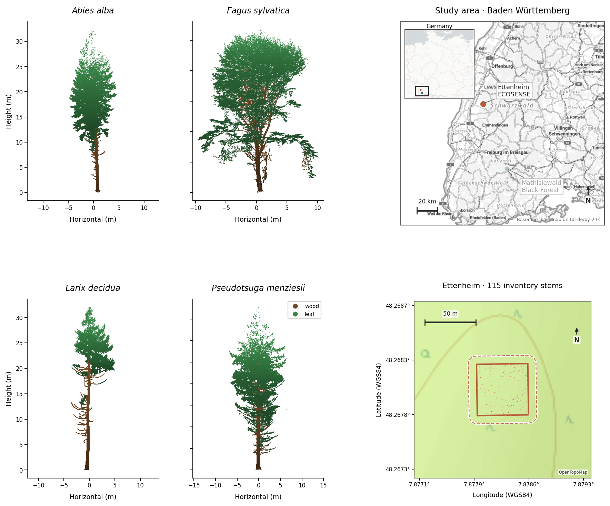
Mathislewald (Hinterzarten)
Mathislewald is the contrasting upland site: southern Black Forest near Hinterzarten, next to Mathisleweiher (approximately 47.8847°N, 8.0885°E). It is substantially higher than Ettenheim, with a cooler, wetter montane climate (cooler summers, colder winters, more precipitation).The analysed subplot is smaller (about \(25\,\mathrm{m}\times 25\,\mathrm{m}\), \(625\,\mathrm{m}^{2}\)), with 34 inventoried stems. Norway spruce (Picea abies) dominates at 64.7%, followed by European beech (Fagus sylvatica, 23.5%) and silver fir (Abies alba, 11.8%).
The site is part of a 127 ha University of Freiburg research and teaching forest that is digitised with remote sensing and used as a pilot region for digital-twin and augmented-reality work [29,30]29. Professur für Waldwachstum und Dendroökologie, U. O. F. (2026). Forschungsinfrastruktur.https://uni-freiburg.de/unr-wwd/forschung/infrastruktur30. Wissen über den Wald im Wandel (WWW 4.0), U. O. F. (2026). Steckbrief XR Future Forest Lab.https://uni-freiburg.de/www40/ki-projekte-im-forst/steckbrief-xr-future-forest-lab/. That setting links to WaldAgil, which targets individual-tree forest digitisation with drones, laser scanning, AI-based tree recognition and AR interfaces for digital-twin scenario planning [31,32]31. WaldAgil, U. O. F. (2026). WaldAgil.https://uni-freiburg.de/unr-waldagil/32. WaldAgil, U. O. F. (2026). WaldAgil Forschung.https://uni-freiburg.de/unr-waldagil/forschung/.
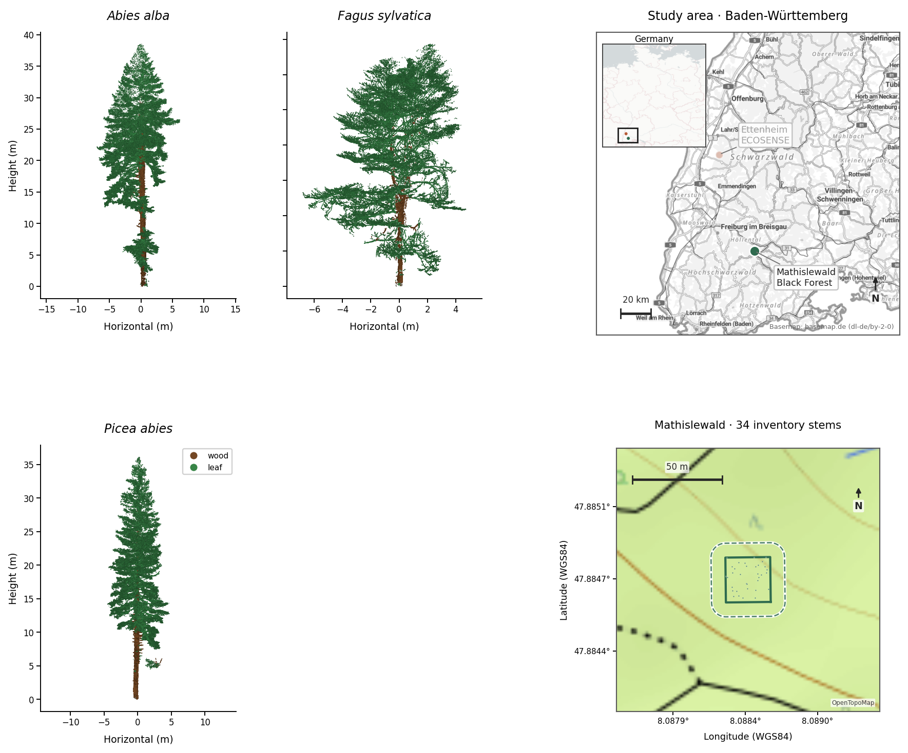
Data and models
Field inventory supplies species, DBH and related stem attributes used as taxonomic ground truth [4,22,33]4. Liang, X., Kankare, V., Hyyppä, J., Wang, Y., Kukko, A., Haggrén, H., Yu, X., Kaartinen, H., Jaakkola, A., Guan, F., Holopainen, M., & Vastaranta, M. (2016). Terrestrial laser scanning in forest inventories. ISPRS Journal of Photogrammetry and Remote Sensing, 115, 63-77.https://doi.org/10.1016/j.isprsjprs.2016.01.00622. Liu, G., Wang, J., Dong, P., Chen, Y., & Liu, Z. (2018). Estimating individual tree height and diameter at breast height (DBH) from terrestrial laser scanning (TLS) data at plot level. Forests, 9(7), 398.https://doi.org/10.3390/f907039833. Riedel, T., & Kändler, G. (2017). . Forstarchiv, 88(2), 31-38.https://doi.org/10.4432/0300-4112-88-31. All evaluated clouds are TLS so both sites share the same proximal geometric reference; drone laser scanning in the wider ECOSENSE and WaldAgil portfolios is out of scope here [27,31]27. Chair of Sensor-based Geoinformatics, U. O. F. (2026). ECOSENSE - DFG Collaborative Research Centre.https://uni-freiburg.de/enr-geosense/research/ecosense/31. WaldAgil, U. O. F. (2026). WaldAgil.https://uni-freiburg.de/unr-waldagil/.Instance segmentation uses SegmentAnyTree [15]15. Wielgosz, M., Puliti, S., Xiang, B., Schindler, K., & Astrup, R. (2024). SegmentAnyTree: A sensor and platform agnostic deep learning model for tree segmentation using laser scanning data. Remote Sensing of Environment, 313, 114367.https://doi.org/10.1016/j.rse.2024.114367 and ForestMamba [19]19. Nguyen, T. T., Vu, T. A., Le, D. V., Kawanishi, Y., Komamizu, T., Ide, I., & Kattenborn, T. (2026). ForestMamba: Sparse Mamba with Geometry-guided Queries for 3D Forest Point Cloud Segmentation.https://doi.org/10.48550/arXiv.2606.01549https://arxiv.org/abs/2606.01549; species classification uses DetailView [8]8. Puliti, S., Lines, E. R., Müllerová, J., Frey, J., Schindler, Z., Straker, A., Allen, M. J., Winiwarter, L., Rehush, N., Hristova, H., Murray, B., et al. (2025). Benchmarking tree species classification from proximally sensed laser scanning data: Introducing the FOR-species20K dataset. Methods in Ecology and Evolution, 16(4), 801-818.https://doi.org/10.1111/2041-210X.14503. Inventory labels are mapped to FOR-species20K taxonomy IDs; unmapped labels are dropped from species accuracy. Manual instance references were built in CloudCompare with stable instance identifiers so the same stems can be scored under different automatic instance sources.
In the tree-point reference packages, Ettenheim (\(50\,\mathrm{m}\times 50\,\mathrm{m}\)) has about \(20.5\) million tree points (\(\approx 8.2\,\)k m\(^{-2}\)), while Mathislewald (\(25\,\mathrm{m}\times 25\,\mathrm{m}\)) has about \(12.9\) million (\(\approx 20.7\,\)k m\(^{-2}\)). The denser Mathislewald cloud is why that site uses the smaller footprint.
Methodology
The sites already supply field inventory and TLS. The work that follows turns those products into a shared evaluation chain: clip each cloud to the inventoried stand, cut it into editable tiles, build a geometric tree reference by hand, score ForestMamba and SegmentAnyTree against that reference, link inventory stems to manual trees for taxonomy, then run DetailView on the same stems under several instance sources. All geospatial steps use EPSG:32632.
From full TLS scenes to editable tiles
The delivered TLS scenes are larger than the inventoried stands. Inventory stem positions were enclosed with a concave hull, buffered by \(10\,\mathrm{m}\), and used to clip the cloud so later work stayed inside the area supported by both inventory and geometry. Hull tightness was adjusted per site until the boundary followed the stand without cutting valid inventory stems; every retained inventory point had to fall inside the clip. The retained cloud therefore surrounds the stand with a controlled margin (Figure 3).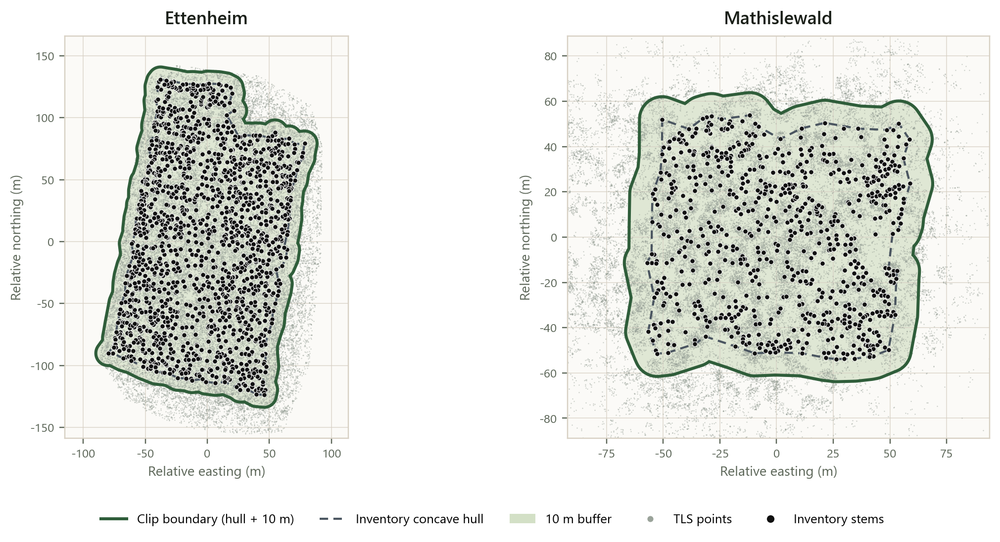
Even clipped, the clouds are too large for interactive three-dimensional editing. Each scene was cut into \(25\,\mathrm{m}\times 25\,\mathrm{m}\) tiles centred on the clip. Only cells that intersected the clip were retained and numbered from the centre. Preliminary ForestMamba labels in the source clouds were used to export one layer per predicted tree, plus ground and catch-all material. Trees with any point within \(0.12\,\mathrm{m}\) of the outer clip edge were dropped so incomplete edge crowns would not enter the reference.
Annotated tiles were Ettenheim tile_001-tile_004 (about \(50\,\mathrm{m}\times 50\,\mathrm{m}\)) and Mathislewald tile_001 (about \(25\,\mathrm{m}\times 25\,\mathrm{m}\); Figure 4). Remaining tiles were archived but not manually edited. Dense temperate TLS editing remains labour-intensive even with modern scanners [4,12]12. Wilkes, P., Lau, A., Disney, M., Calders, K., Burt, A., Gonzalez de Tanago, J., Bartholomeus, H., Brede, B., & Herold, M. (2017). Data acquisition considerations for terrestrial laser scanning of forest plots. Remote Sensing of Environment, 196, 140-153.https://doi.org/10.1016/j.rse.2017.04.0304. Liang, X., Kankare, V., Hyyppä, J., Wang, Y., Kukko, A., Haggrén, H., Yu, X., Kaartinen, H., Jaakkola, A., Guan, F., Holopainen, M., & Vastaranta, M. (2016). Terrestrial laser scanning in forest inventories. ISPRS Journal of Photogrammetry and Remote Sensing, 115, 63-77.https://doi.org/10.1016/j.isprsjprs.2016.01.006.
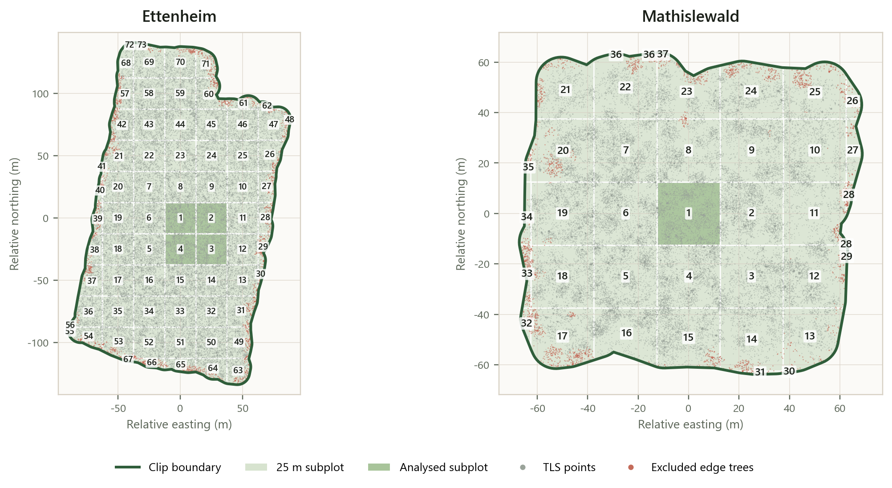
Building the geometric tree reference
For each analysed tile the exported layers were imported into CloudCompare. Starting from the preliminary ForestMamba instances, layers were split, merged and cleaned until each retained tree layer was one physical stem and crown. Ambiguous or non-tree material stayed in catch-all layers rather than being forced into a tree ID. Completed projects were spot-checked for mixed stems or incomplete crowns.Scoring ForestMamba and SegmentAnyTree
Automatic predictions were compared with the manual layers on a shared point set \(X_{\mathrm{eval}}\): every point in the analysed projects (trees, catch-alls and ground). The same XYZ locations were taken from ForestMamba and SegmentAnyTree so each point carried a ground-truth ID and a predicted ID. Ground and non-tree material used ground-truth ID-1.Matching followed the ForestFormer3D individual-tree style [17]17. Xiang, B., Wielgosz, M., Puliti, S., Král, K., Krůček, M., Missarov, A., & Astrup, R. (2025). ForestFormer3D: A Unified Framework for End-to-End Segmentation of Forest LiDAR 3D Point Clouds. In Proceedings of the IEEE/CVF International Conference on Computer Vision (ICCV) (pp. 24321-24331).. Point-count IoU was computed between each prediction and each ground-truth tree. Predictions with fewer than \(100\) points were dropped in the primary protocol; sensitivity also tested \(n_{\mathrm{min}}\in\{0,25,50,100,200\}\). Remaining predictions were assigned by greedy one-to-one IoU maximisation, accepting a match only at IoU \(\ge\tau=0.5\). A Hungarian assignment on the same IoU matrix (still rejecting pairs below \(\tau\)) was run as a check; primary tables keep greedy matching with \(n_{\mathrm{min}}=100\).
From those matches we report precision, recall, F1 and coverage (mean best IoU per ground-truth tree, without the \(\tau\) gate), plus TP/FP/FN counts. Secondary diagnostics flag over- and under-segmentation at IoU \(\ge 0.25\). Matching was repeated for \(\tau\in\{0.3,0.4,0.5,0.6,0.7\}\) and per subplot. Plot-level F1 pools TP/FP/FN across the subplot. Separately, per-tree hard F1 scores each ground-truth tree under the same greedy \(\tau=0.5\) assignment: matched trees get the pairwise point-count F1 with their partner; unmatched trees score zero. Macro hard F1 is the unweighted mean over all \(N_{\mathrm{GT}}\) trees, so misses pull the mean down. Soft per-tree F1 (best overlap without the exclusive \(\tau\) gate) is only a secondary diagnostic.
To see which trees fail, hard F1 was related to three structural covariates from each manual tree cloud. Height is \(z_{99}\textrm{-}z_{05}\). The whole-tree planimetric centroid is the mean \((x,y)\) of all retained points of that tree. Nearest-neighbour distance is the planimetric gap from that centroid to the closest other ground-truth centroid. Whole-tree convex-hull volume is the 3D convex hull of all retained XYZ points of that tree. Fixed-radius neighbour counts and planimetric hull-overlap fractions were also checked on interior trees but did not clearly improve on nearest-neighbour distance once residualised on spacing, so reported packing associations keep nearest-neighbour distance. Inventory matching later uses breast-height centroids.
Associations used two-sided Spearman tests. Trees in a subplot are spatially dependent, so \(N\) trees are not \(N\) independent replicates. The battery is exploratory: effect sizes (tercile means and \(\rho\)) are emphasised, \(\rho\) and \(p\) are reported even when \(p\ge 0.05\), and Benjamini-Hochberg \(q\)-values within site provide a multiplicity-aware sensitivity summary.
Linking inventory stems for species evaluation
Segmentation uses the full manual reference. Species evaluation needs a second link: which inventory stems correspond to which manual trees.Before assignment, inventory stems and manual trees were overlaid in a breast-height plan view (\(1.3\,\mathrm{m}\pm 0.05\,\mathrm{m}\) above a local ground surface fitted to labelled ground; Figure 5). Residual offsets that still identified the same tree were accepted. The inventory overlay was shifted from paired markers at Mathislewald and adjusted interactively at Ettenheim.
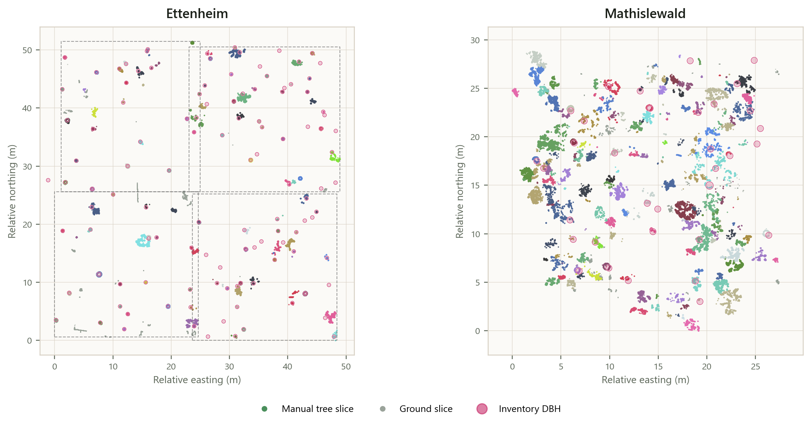
Inventory stems and manual layers were then paired one-to-one on that breast-height geometry. A pair was eligible only when equation dist r_inv + r_layer + 0.75 m, equation with \(r_{\mathrm{inv}}\) the inventory breast-height radius and \(r_{\mathrm{layer}}\) the radius of the layer's breast-height point envelope. Each stem and each layer could enter at most one pair. Near-ties were broken with an attribute cost on diameter ratio and relative height difference; short stubs were strongly penalised. A few visually confirmed but geometrically awkward pairs were added by hand; unsuitable layers were excluded from the matched set.
Unmatched inventory stems and unmatched manual layers were reviewed separately. Only exclusive inventory-manual pairs enter species classification, so species scores are conditional on successful registration and are not plot-wide accuracy on every tree.
Species classification across instance tracks
DetailView [8]8. Puliti, S., Lines, E. R., Müllerová, J., Frey, J., Schindler, Z., Straker, A., Allen, M. J., Winiwarter, L., Rehush, N., Hristova, H., Murray, B., et al. (2025). Benchmarking tree species classification from proximally sensed laser scanning data: Introducing the FOR-species20K dataset. Methods in Ecology and Evolution, 16(4), 801-818.https://doi.org/10.1111/2041-210X.14503 was run on the inventory-matched stems using the European model region. Point-wise species IDs and probabilities were returned, with probabilities averaged over \(50\) augmented forward passes per tree as in FOR-species20K. Restricting species scores to inventory-matched stems reflects that taxonomic products inherit both delineation quality and field-label completeness [6,8]6. Fassnacht, F. E., Latifi, H., Sterenczak, K., Modzelewska, A., Lefsky, M., Waser, L. T., Straub, C., & Ghosh, A. (2016). Review of studies on tree species classification from remotely sensed data. Remote Sensing of Environment, 186, 64-87.https://doi.org/10.1016/j.rse.2016.08.0138. Puliti, S., Lines, E. R., Müllerová, J., Frey, J., Schindler, Z., Straker, A., Allen, M. J., Winiwarter, L., Rehush, N., Hristova, H., Murray, B., et al. (2025). Benchmarking tree species classification from proximally sensed laser scanning data: Introducing the FOR-species20K dataset. Methods in Ecology and Evolution, 16(4), 801-818.https://doi.org/10.1111/2041-210X.14503.To isolate instance source, DetailView was run on the same matched stems under four tracks: manual, SegmentAnyTree, ForestMamba, and ForestMamba+BluePoint. BluePoint re-runs ForestMamba on points left unclassified after the first pass and merges newly found clusters with the first-pass instances. Trees missed by automatic segmentation outside the matched set do not enter the scores; the ablation measures classification given instances, not end-to-end species-map accuracy.
Each track was aggregated to the stem by the mode of non-nodata species IDs inside the instance. Inventory names were mapped to FOR-species20K taxonomy IDs; predictions outside the local mapped classes were treated as open-set.
Stem-level summaries used overall accuracy, balanced accuracy, and macro-averaged precision, recall and F1. Overall accuracy used percentile bootstrap intervals (\(1000\) resamples). Gaps versus the manual track used paired bootstrap intervals on stem-wise \(\Delta\mathrm{OA}\). The same structural covariates used for hard F1 were joined to the matched stems so species accuracy can be stratified on the same axes, again with exploratory Spearman tests and within-site Benjamini-Hochberg \(q\)-values.
Results
Observational overview of the prepared scenes
On the analysed footprints (Ettenheimtile_001-tile_004; Mathislewald tile_001; Methodology Figures 3 and 4), larger trees look broadly similar under the manual reference, ForestMamba and SegmentAnyTree (Figure 6), while SegmentAnyTree shows more visible mistakes, especially among smaller trees (Figure 7).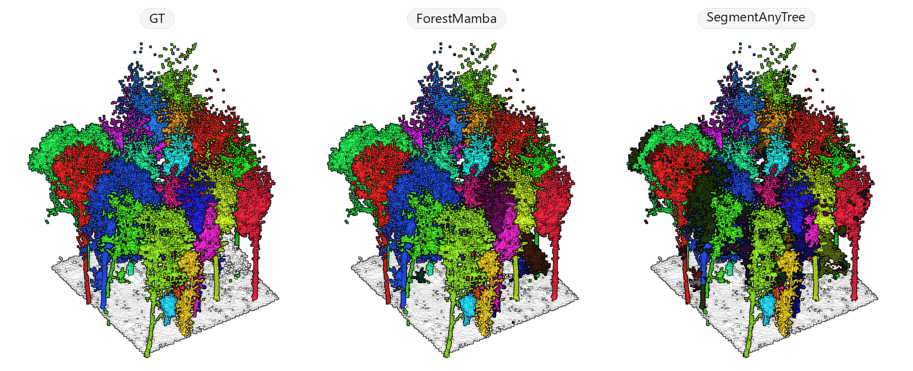
tile_001: qualitative instance colouring for the manual reference, ForestMamba and SegmentAnyTree.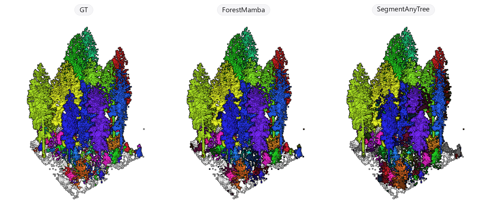
tile_001: same layout as Figure 6 for the manual reference, ForestMamba and SegmentAnyTree.Manual reference scope
| Site | Subplots | \(N_GT\) | Tree points | Total \(X_eval\) points |
|---|---|---|---|---|
| Ettenheim | 001-004 | 128 | 22 714 670 | 26 997 057 |
| Mathislewald | 001 | 189 | 14 605 364 | 24 260 295 |
Per-subplot ground-truth tree counts at Ettenheim were 25, 41, 38 and 24 for tile_001 to tile_004. At Mathislewald the single annotated subplot contributed 189 ground-truth trees (Table 1). These counts define the denominator for recall and related detection metrics below. They are distinct from the later inventory-matched stem counts used for species classification (Figure 8).
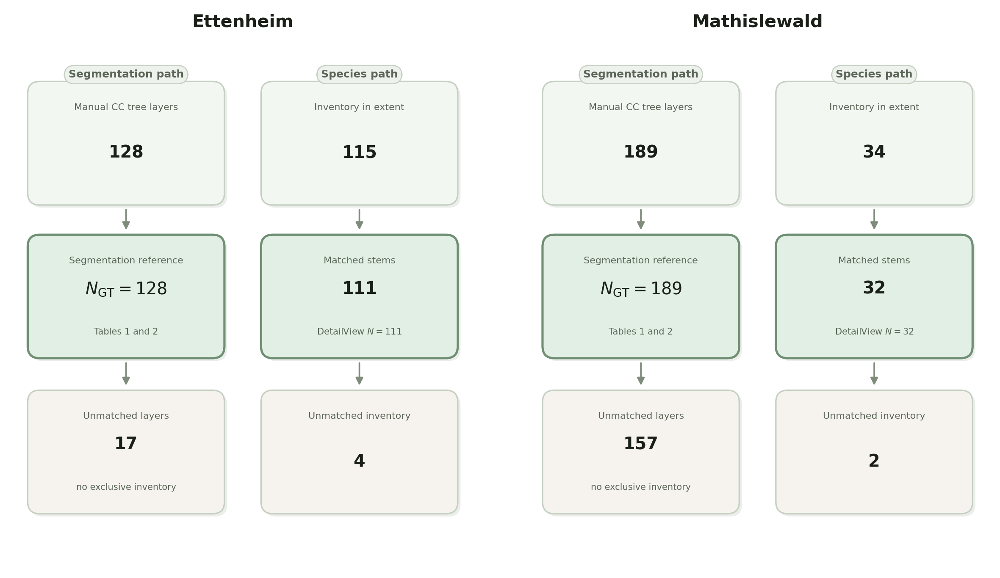
Overall performance
Plot-level instance segmentation
A Hungarian assignment check on the same IoU matrices reproduced the greedy plot-level precision, recall, F1 and coverage to numerical identity on both sites and both models at \(\tau=0.5\). Varying the minimum predicted-instance size over \(n_{\mathrm{min}}\in\{0,25,50,100,200\}\) changed F1 by at most a few percentage points and did not alter model ranking or the Mathislewald SegmentAnyTree failure (F1 remained near 14-15% across thresholds). At the primary settings (\(\tau=0.5\), \(n_{\mathrm{min}}=100\)), Ettenheim F1 was 70.3% for ForestMamba and 64.2% for SegmentAnyTree; Mathislewald F1 was 37.0% and 14.5% (Figure 9; Table 2).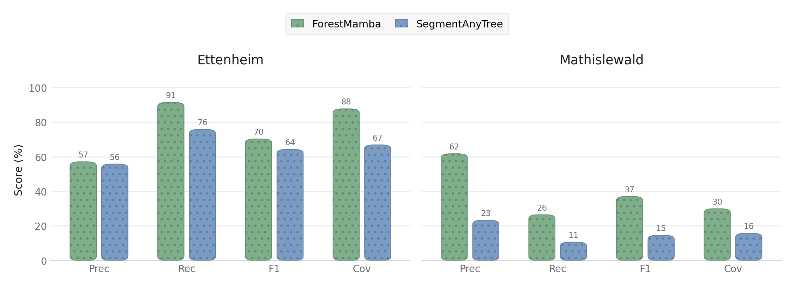
| Site | Method | Prec | Rec | F1 | Cov | \(N_pred\) | TP | FP | FN |
|---|---|---|---|---|---|---|---|---|---|
| Ettenheim | ForestMamba | 57.1 | 91.4 | 70.3 | 87.7 | 205 | 117 | 88 | 11 |
| Ettenheim | SegmentAnyTree | 55.7 | 75.8 | 64.2 | 66.9 | 174 | 97 | 77 | 31 |
| Mathislewald | ForestMamba | 61.7 | 26.5 | 37.0 | 29.9 | 81 | 50 | 31 | 139 |
| Mathislewald | SegmentAnyTree | 23.3 | 10.6 | 14.5 | 15.7 | 86 | 20 | 66 | 169 |
At Ettenheim, ForestMamba per-subplot F1 ranged from 63.0% on tile_004 to 72.7% on tile_001; SegmentAnyTree ranged from 46.5% on tile_003 to 65.4% on tile_002 (Table 3).
| Subplot | \(N_GT\) | FM F1 | FM Cov | SAT F1 | SAT Cov | FM TP/FP/FN | SAT TP/FP/FN |
|---|---|---|---|---|---|---|---|
| 001 | 25 | 72.7 | 94.3 | 59.5 | 76.8 | 24/17/1 | 22/27/3 |
| 002 | 41 | 71.8 | 88.4 | 65.4 | 71.9 | 37/25/4 | 34/29/7 |
| 003 | 38 | 69.5 | 80.3 | 46.5 | 52.9 | 33/24/5 | 23/38/15 |
| 004 | 24 | 63.0 | 91.4 | 56.3 | 76.1 | 23/26/1 | 20/27/4 |
Across \(\tau\in\{0.3,0.4,0.5,0.6,0.7\}\), Ettenheim ForestMamba F1 moved from 70.9% at \(\tau=0.3\) to 70.3% at \(\tau=0.5\) and 66.1% at \(\tau=0.7\); SegmentAnyTree F1 moved from 68.9% to 64.2% to 50.3% (Figures A.2 and A.3). At Mathislewald, ForestMamba F1 moved from 46.7% to 37.0% to 23.7%, and SegmentAnyTree F1 from 26.2% to 14.5% to 7.3%.
At \(\tau=0.5\), ForestMamba recorded 11 missed trees and 10 leakage-flagged true positives at Ettenheim versus 31 and 42 for SegmentAnyTree; at Mathislewald the same counts were 139 and 18 versus 169 and 12 (Table 4). Appendix plan views at Mathislewald are dominated by false-negative ground-truth centroids for both models, with comparatively few true positives (Figures A.6 and A.7; IoU distributions in Figures A.4 and A.5). ForestMamba recovers more matched trees than SegmentAnyTree, but neither leaves a spatially localised miss pattern confined to plot edges.
| Site | Method | Over-seg. | Under-seg. | Missed | Leakage-flagged TP |
|---|---|---|---|---|---|
| Ettenheim | ForestMamba | 1 | 4 | 11 | 10 |
| Ettenheim | SegmentAnyTree | 1 | 4 | 31 | 42 |
| Mathislewald | ForestMamba | 0 | 6 | 139 | 18 |
| Mathislewald | SegmentAnyTree | 1 | 1 | 169 | 12 |
At Ettenheim, ForestMamba macro hard F1 was 88.3% (95% CI 83.2-92.9) against a plot F1 of 70.3%; SegmentAnyTree was 67.5% (60.9-74.0) against 64.2% (Table 5; Figure 10). At Mathislewald, ForestMamba macro hard F1 was 22.8% (95% CI 17.3-28.4) against a plot F1 of 37.0%; SegmentAnyTree was 8.7% (5.1-12.3) against 14.5%.
| Site | Method | Plot F1 | Macro hard F1 | 95% CI |
|---|---|---|---|---|
| Ettenheim | ForestMamba | 70.3 | 88.3 | 83.2-92.9 |
| Ettenheim | SegmentAnyTree | 64.2 | 67.5 | 60.9-74.0 |
| Mathislewald | ForestMamba | 37.0 | 22.8 | 17.3-28.4 |
| Mathislewald | SegmentAnyTree | 14.5 | 8.7 | 5.1-12.3 |
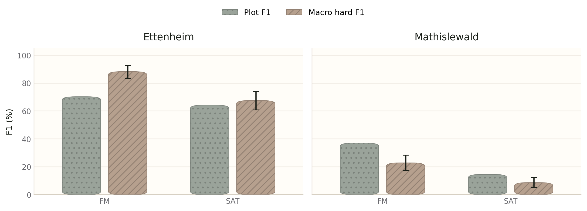
Assignment of inventory stems to trees
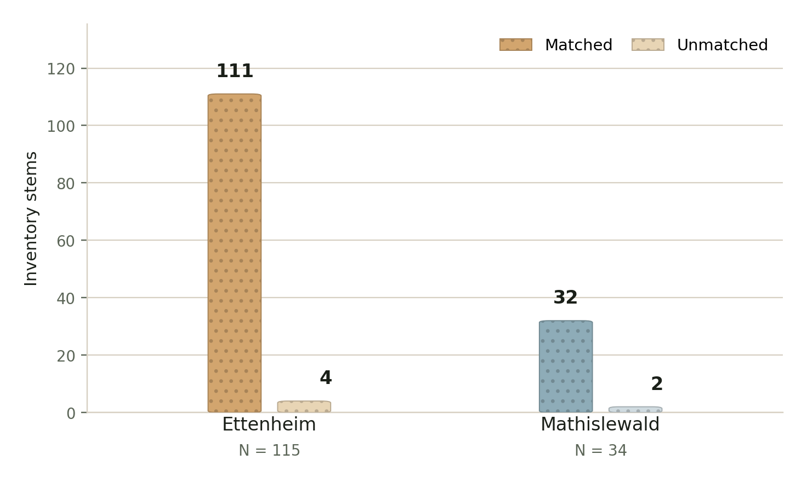
| Site | Inventory in extent | Matched | Unmatched inv. | Manual layers | Unmatched layers |
|---|---|---|---|---|---|
| Ettenheim | 115 | 111 | 4 | 128 | 17 |
| Mathislewald | 34 | 32 | 2 | 189 | 157 |
Exclusive matching retained 111 Ettenheim and 32 Mathislewald inventory stems (Figure 11; Table 6). At Mathislewald the large unmatched-layer count (157 of 189) is expected: the subplot has many more manual trees than the 34 inventoried stems, so most unmatched layers simply lack a field partner.
Species classification with DetailView
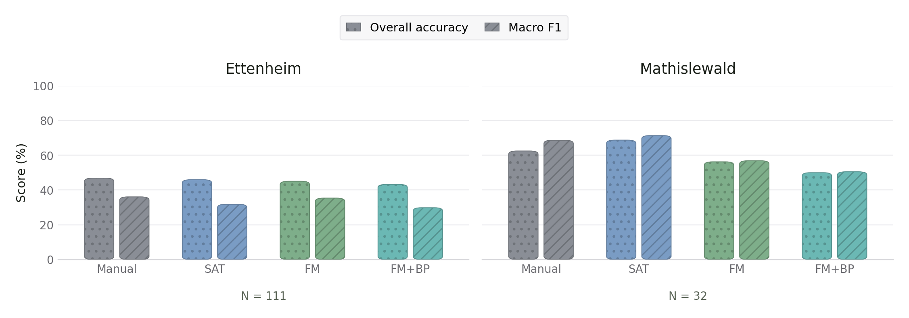
| Site | Instance source | \(N\) | OA | OA 95% CI | Macro P | Macro R | Macro F1 |
|---|---|---|---|---|---|---|---|
| Ettenheim | Manual | 111 | 46.8 | 36.9-55.9 | 49.6 | 35.1 | 36.1 |
| Ettenheim | SegmentAnyTree | 111 | 45.9 | 36.9-55.0 | 44.0 | 33.9 | 31.8 |
| Ettenheim | ForestMamba | 111 | 45.0 | 35.1-55.0 | 49.3 | 35.8 | 35.4 |
| Ettenheim | ForestMamba+BluePoint | 111 | 43.2 | 34.2-51.4 | 43.7 | 31.6 | 29.8 |
| Mathislewald | Manual | 32 | 62.5 | 46.8-78.1 | 86.7 | 57.9 | 68.7 |
| Mathislewald | SegmentAnyTree | 32 | 68.8 | 50.0-84.4 | 86.9 | 61.1 | 71.4 |
| Mathislewald | ForestMamba | 32 | 56.3 | 37.5-71.9 | 96.1 | 45.2 | 56.9 |
| Mathislewald | ForestMamba+BluePoint | 32 | 50.0 | 34.4-65.6 | 67.8 | 42.1 | 50.5 |
| Both (pooled) | Manual | 143 | 50.3 | - | 63.1 | 48.4 | 49.5 |
| Both (pooled) | SegmentAnyTree | 143 | 51.0 | - | 57.4 | 49.2 | 46.5 |
| Both (pooled) | ForestMamba | 143 | 47.6 | - | 61.8 | 49.4 | 47.8 |
| Both (pooled) | ForestMamba+BluePoint | 143 | 44.8 | - | 55.7 | 44.3 | 42.6 |
DetailView on manual instances
On the manual-instance track, overall accuracy was 46.8% at Ettenheim (\(N=111\); bootstrap 95% CI 36.9-55.9) and 62.5% at Mathislewald (\(N=32\); 46.8-78.1); macro F1 was 36.1% and 68.7% (Figure 12; Table 7). Class supports on the matched sets were: Ettenheim European beech 79, silver fir 17, Douglas fir 13, European larch 1, Norway spruce 1; Mathislewald Norway spruce 21, European beech 7, silver fir 4.At Ettenheim the strongest manual-track diagonal entry was Douglas fir (92% of true stems predicted as Douglas fir); European beech was 42% on the diagonal, and silver fir was split mainly between correct silver fir (41%) and Douglas fir predictions (35%) (Figures 13 and 14). The single European larch stem and the single Norway spruce stem were each predicted entirely as Douglas fir. At Mathislewald, Norway spruce (67%), European beech (57%) and silver fir (50%) retained the largest correct fractions on the diagonal, with residual mass on neighbouring conifer and broadleaf labels.
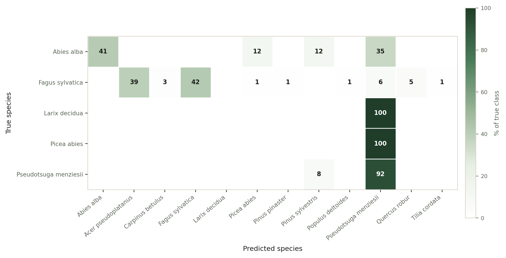
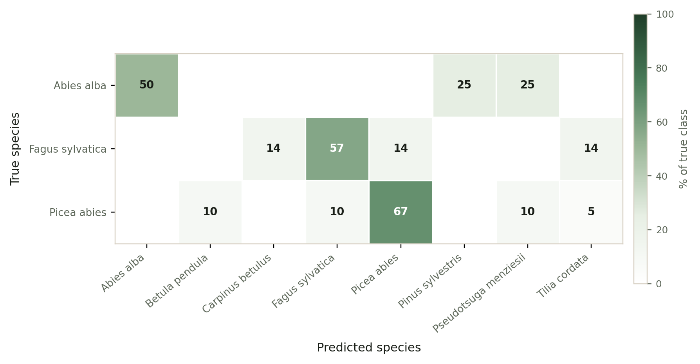
Structural relationships
At Ettenheim (\(N=128\)), hard F1 increased from short to tall trees for both models (ForestMamba tercile means 79.2% / 89.9% / 95.8%; SegmentAnyTree 51.5% / 64.1% / 86.9%; Figures 15, 16 and 17; Table 8). The Spearman association with height showed no clear evidence for ForestMamba (\(\rho=0.04\), \(p=0.68\)) and met \(p<0.05\) for SegmentAnyTree (\(\rho=0.19\), \(p=0.032\)). Nearest-neighbour distance among whole-tree centroids showed a clearer packing signal: crowded trees (low NN) had mean hard F1 of 75.0% (ForestMamba) and 41.9% (SegmentAnyTree), versus 97.5% and 87.2% in the most open tercile. Spearman \(\rho\) was \(0.28\) (\(p=0.0016\)) for ForestMamba and \(0.41\) (\(p<0.001\)) for SegmentAnyTree. Partial correlations residualising on \(\log(1+n_{\mathrm{points}})\) remained positive (\(0.25\) and \(0.35\)). Whole-tree convex-hull volume tracked the same direction as size (ForestMamba terciles 74.5% / 93.0% / 97.5%; SegmentAnyTree 46.6% / 74.2% / 82.0%), but neither correlation provided clear evidence under \(p<0.05\) (ForestMamba \(\rho=0.08\), \(p=0.36\); SegmentAnyTree \(\rho=0.17\), \(p=0.052\)).At Mathislewald (\(N=189\)), height and whole-tree convex-hull volume again separated success more strongly than nearest-neighbour spacing, but absolute hard F1 was much lower than at Ettenheim because most small reference trees were missed. ForestMamba hard F1 rose from 3.6% in the lowest height tercile to 53.1% in the highest (\(\rho=0.57\), \(p<0.001\)). SegmentAnyTree rose from 0.0% to 21.2% (\(\rho=0.42\), \(p<0.001\)). Hull-volume terciles were 0.0% / 11.2% / 57.3% for ForestMamba (\(\rho=0.64\), \(p<0.001\)) and 0.0% / 2.3% / 23.8% for SegmentAnyTree (\(\rho=0.44\), \(p<0.001\)). Nearest-neighbour distance met \(p<0.05\) for ForestMamba (\(\rho=0.31\), \(p<0.001\); open-tercile mean 41.3% versus 13.5% crowded) but showed no clear evidence for SegmentAnyTree (\(\rho=0.07\), \(p=0.35\); open 10.4% versus crowded 7.1%).
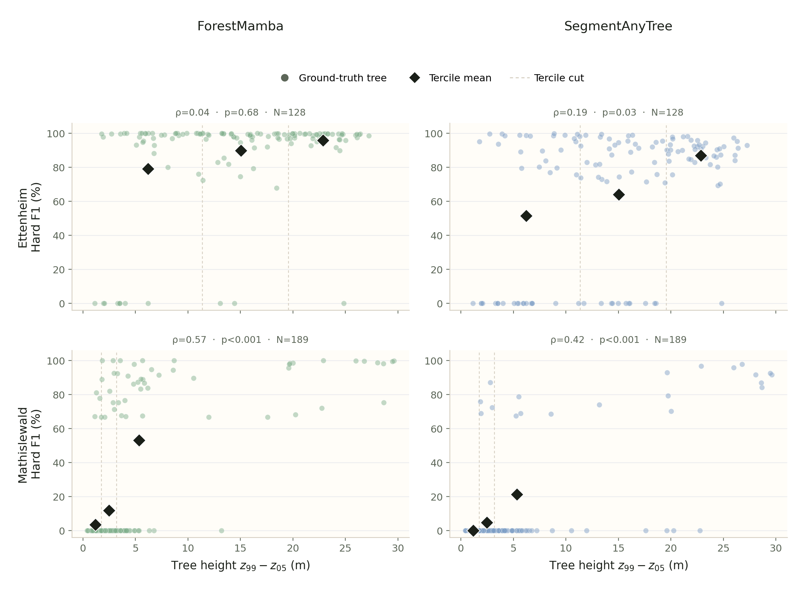
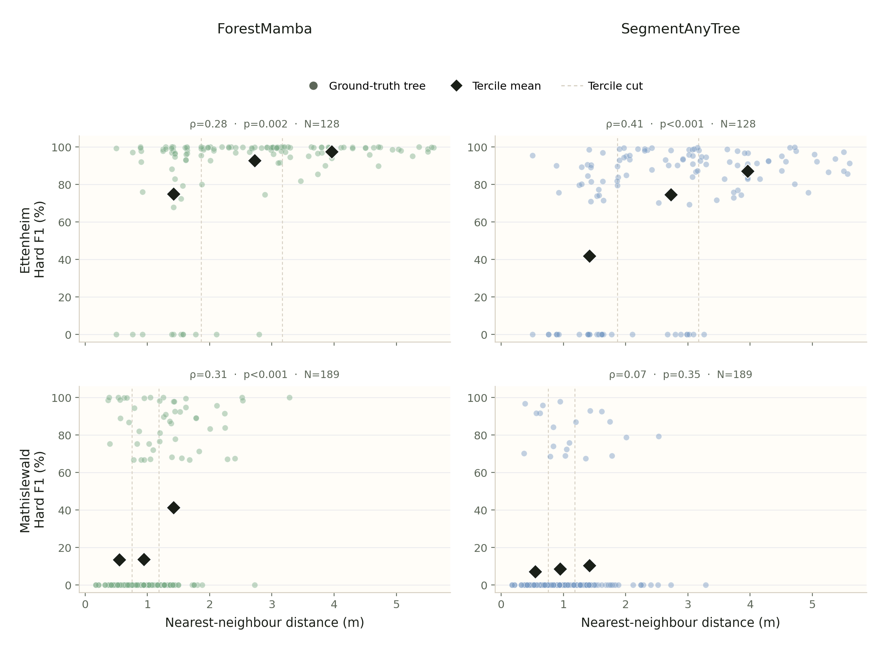
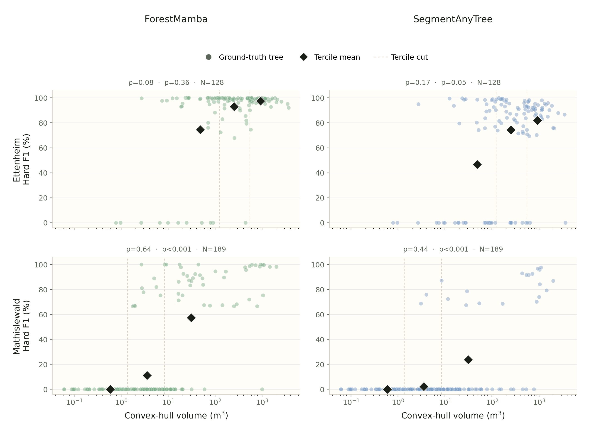
| Site | Covariate | ForestMamba | SegmentAnyTree |
|---|---|---|---|
| Ettenheim | Height | 79.2 / 89.9 / 95.8 | 51.5 / 64.1 / 86.9 |
| Ettenheim | Nearest neighbour | 75.0 / 92.8 / 97.5 | 41.9 / 74.5 / 87.2 |
| Ettenheim | Whole-tree hull volume | 74.5 / 93.0 / 97.5 | 46.6 / 74.2 / 82.0 |
| Mathislewald | Height | 3.6 / 11.8 / 53.1 | 0.0 / 4.8 / 21.2 |
| Mathislewald | Nearest neighbour | 13.5 / 13.7 / 41.3 | 7.1 / 8.6 / 10.4 |
| Mathislewald | Whole-tree hull volume | 0.0 / 11.2 / 57.3 | 0.0 / 2.3 / 23.8 |
On the manual track, Ettenheim broadleaf overall accuracy was 41.8% (\(N=79\)) and conifer overall accuracy was 59.4% (\(N=32\)); Mathislewald broadleaf overall accuracy was 57.1% (\(N=7\)) and conifer overall accuracy was 64.0% (\(N=25\)) (Figures 18 and 19). Restricting to stems taller than \(5\,\mathrm{m}\) gave manual-track overall accuracies of 46.3% at Ettenheim (\(N=108\)) and 68.2% at Mathislewald (\(N=22\)). Spearman association between stem height and manual-track correctness showed no clear evidence at either site under \(p<0.05\) (\(\rho=-0.04\), \(p=0.66\) at Ettenheim; \(\rho=0.21\), \(p=0.25\) at Mathislewald).
At Ettenheim, manual-track overall accuracy was 42.1% in the most crowded NN tercile, 41.7% in the mid tercile and 56.8% in the most open tercile (\(N=38/36/37\); Figures 20 and 21; Table 9). The Spearman link between NN distance and correctness was positive but showed no clear evidence under \(p<0.05\) (\(\rho=0.12\), \(p=0.21\)). Automatic tracks likewise showed no clear evidence (SegmentAnyTree \(\rho=0.14\), \(p=0.16\); ForestMamba \(\rho=0.14\), \(p=0.15\); ForestMamba+BluePoint \(\rho=0.13\), \(p=0.17\)). Whole-tree convex-hull volume showed the opposite gradient: manual OA fell from 64.9% (low volume) through 45.9% (mid) to 29.7% (high volume), with Spearman \(\rho=-0.28\) (\(p=0.0030\)). ForestMamba (\(\rho=-0.27\), \(p=0.0048\)) and ForestMamba+BluePoint (\(\rho=-0.20\), \(p=0.036\)) reproduced the same decline. SegmentAnyTree showed no clear evidence under \(p<0.05\) (\(\rho=-0.12\), \(p=0.21\)).
At Mathislewald (\(N=32\)), manual OA was 36.4% in the crowded NN tercile, 81.8% mid and 70.0% open (\(\rho=0.24\), \(p=0.18\)). Automatic tracks also showed no clear evidence under \(p<0.05\) (SegmentAnyTree \(\rho=0.18\), \(p=0.32\); ForestMamba \(\rho=-0.017\), \(p=0.93\); ForestMamba+BluePoint \(\rho=-0.091\), \(p=0.62\)). Hull-volume terciles were 45.5% / 80.0% / 63.6% with no clear rank association under \(p<0.05\) (manual \(\rho=0.17\), \(p=0.36\); SegmentAnyTree \(\rho=-0.015\), \(p=0.94\); ForestMamba \(\rho=-0.048\), \(p=0.80\); ForestMamba+BluePoint \(\rho=-0.14\), \(p=0.46\)). With about ten stems per bin, these Mathislewald strata are directional only.
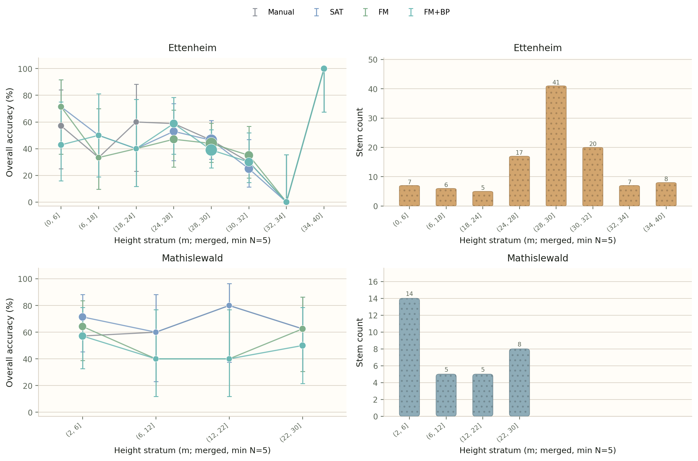
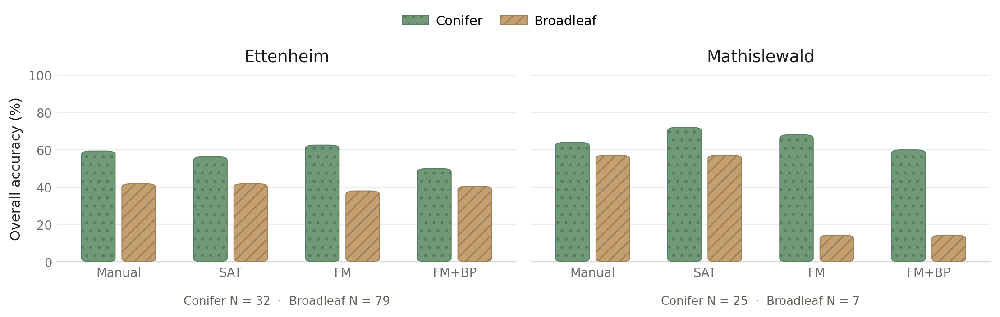
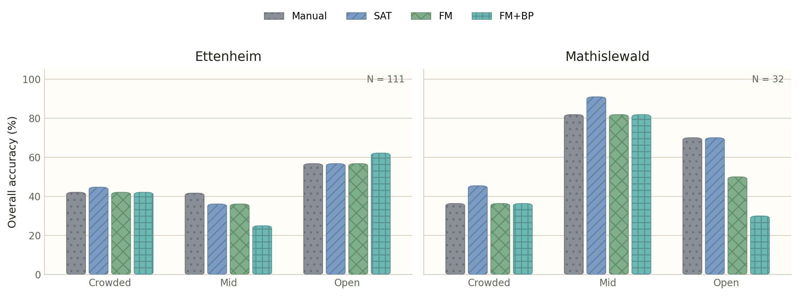
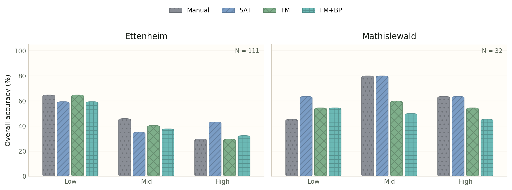
| Site | Covariate | Low / crowded | Mid | High / open |
|---|---|---|---|---|
| Ettenheim | Nearest neighbour | 42.1 | 41.7 | 56.8 |
| Ettenheim | Whole-tree hull volume | 64.9 | 45.9 | 29.7 |
| Mathislewald | Nearest neighbour | 36.4 | 81.8 | 70.0 |
| Mathislewald | Whole-tree hull volume | 45.5 | 80.0 | 63.6 |
Segmentation-to-species effects
At Ettenheim, overall accuracy on SegmentAnyTree instances was 0.9 percentage points below the manual track (paired bootstrap 95% CI for \(\Delta\mathrm{OA}\): \(-7.2\) to \(+9.0\); Figure 22; Table 10). ForestMamba was 1.8 percentage points below (CI \(-3.6\) to \(+8.1\)) and ForestMamba+BluePoint was 3.6 percentage points below (CI \(-3.6\) to \(+10.8\)). The ForestMamba+BluePoint minus ForestMamba difference in overall accuracy was \(-1.8\) percentage points (CI \(-9.0\) to \(+5.4\)). At Mathislewald, overall accuracy on SegmentAnyTree instances was 6.3 percentage points above the manual track (CI \(-15.6\) to \(0.0\)). ForestMamba was 6.3 percentage points below (CI \(-6.3\) to \(+18.8\)) and ForestMamba+BluePoint was 12.5 percentage points below (CI \(-3.1\) to \(+31.3\)). The ForestMamba+BluePoint minus ForestMamba difference was \(-6.3\) percentage points (CI \(-18.8\) to \(+3.1\)). With \(N=32\), these Mathislewald intervals are wide.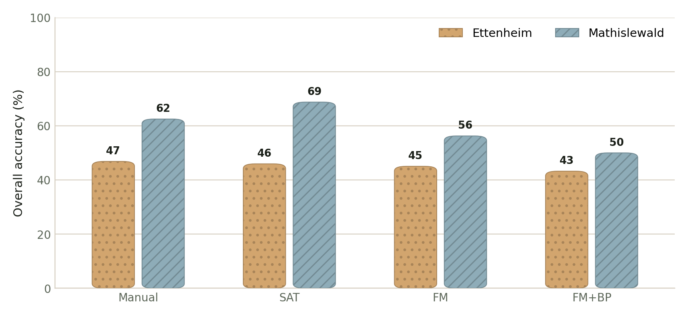
| Contrast | Ettenheim | Mathislewald |
|---|---|---|
| Manual \(-\) SegmentAnyTree | \(+0.9\) [\(-7.2\), \(+9.0\)] | \(-6.3\) [\(-15.6\), \(0.0\)] |
| Manual \(-\) ForestMamba | \(+1.8\) [\(-3.6\), \(+8.1\)] | \(+6.3\) [\(-6.3\), \(+18.8\)] |
| Manual \(-\) ForestMamba+BluePoint | \(+3.6\) [\(-3.6\), \(+10.8\)] | \(+12.5\) [\(-3.1\), \(+31.3\)] |
| ForestMamba+BluePoint \(-\) ForestMamba | \(-1.8\) [\(-9.0\), \(+5.4\)] | \(-6.3\) [\(-18.8\), \(+3.1\)] |
At Ettenheim, manual versus ForestMamba stem-level DetailView agreement was 78.4%, manual versus SegmentAnyTree 65.8%, manual versus ForestMamba+BluePoint 72.1% and ForestMamba versus ForestMamba+BluePoint 77.5% (Table 11). At Mathislewald, manual versus ForestMamba and manual versus SegmentAnyTree were each 81.3%, manual versus ForestMamba+BluePoint was 65.6% and ForestMamba versus ForestMamba+BluePoint was 78.1%.
| Pair | Ettenheim (\(N=111\)) | Mathislewald (\(N=32\)) |
|---|---|---|
| Manual vs SegmentAnyTree | 65.8 | 81.3 |
| Manual vs ForestMamba | 78.4 | 81.3 |
| Manual vs ForestMamba+BluePoint | 72.1 | 65.6 |
| ForestMamba vs ForestMamba+BluePoint | 77.5 | 78.1 |
At Ettenheim, Douglas fir F1 remained comparatively high across tracks, whereas silver fir and European beech F1 declined under ForestMamba and ForestMamba+BluePoint relative to the manual track (Figure 23). At Mathislewald, Norway spruce F1 stayed high under SegmentAnyTree and declined under ForestMamba+BluePoint. European beech and silver fir F1 varied with instance source on the smaller supports.
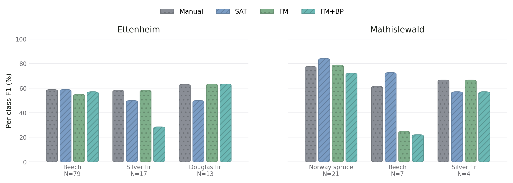
Discussion
Overall performance
Mathislewald packs more trees into a smaller footprint than any Ettenheim tile, so the same matching protocol faces a denser, more fragmented object set. Segmentation \(N_{\mathrm{GT}}\) and inventory-matched stems are different populations (Figure 8): the former denominates recall; the latter is the DetailView set.ForestMamba and SegmentAnyTree share the manual reference point support, so metric gaps reflect label assignment rather than geometry. Residual inventory-to-TLS offsets add the assignment uncertainty noted under Limitations.
At \(\tau=0.5\), ForestMamba recall was high at Ettenheim (91.4%) but only 26.5% at Mathislewald against the full 189-tree reference, still ahead of SegmentAnyTree (75.8%; 10.6%). Precision diverged by site: ForestMamba over-predicted at Ettenheim (precision 57.1%) and kept moderate precision at Mathislewald (61.7%) while missing most reference trees; SegmentAnyTree was moderate at Ettenheim (55.7%) and collapsed at Mathislewald (23.3%). Absolute Mathislewald F1 scores remain low for both models even though ForestMamba ranks ahead.
ForestMamba thus acts as a high-recall detector at Ettenheim whose Mathislewald recall collapses when many small reference trees must each be recovered as their own object. SegmentAnyTree is competitive at Ettenheim but highly sensitive to packing at Mathislewald.
Ettenheim also hides tile-level heterogeneity behind the plot aggregate (Table 3; Figure A.1). Error centroids sit through subplot interiors, not only at edges, so operational thresholds need tile-aware checks, not plot means alone.
IoU threshold sweeps sharpen the same contrast: Ettenheim ForestMamba is relatively stable across \(\tau\), while SegmentAnyTree and both Mathislewald tracks drop more as the gate tightens. Both leave many Mathislewald reference trees with low or zero overlap, so raising \(\tau\) removes many of the remaining true positives.
Over- and under-segmentation counts are small relative to misses and leakage-flagged true positives (Table 4). SegmentAnyTree's elevated leakage-flag rate at Ettenheim, despite usable F1, shows that many accepted objects remain geometrically impure. At Mathislewald the dominant failure for both models is missing most reference trees, with false-negative centroids spread through the subplot rather than confined to edges (Figure A.7).
Macro hard F1 and plot F1 tell complementary stories. At Ettenheim, ForestMamba macro hard F1 exceeds plot F1: strong delineation among detected trees, but a large false-positive penalty at plot scale. At Mathislewald, macro hard F1 sits below plot F1 because many zero-scoring misses pull the per-tree mean down. Ettenheim ForestMamba thus shows that a detection-heavy error mode can coexist with high per-tree overlap once a match exists; Mathislewald shows the opposite when misses dominate.
Under the shared protocol ForestMamba scores higher on both sites on this reference. Because editing began from preliminary ForestMamba instances, that ranking is conditional on reference construction and should not be read as unconditional superiority over SegmentAnyTree on independently delineated ground truth. Those detection-versus-delineation differences matter for any inventory that assumes one predicted object per physical tree and match spreads reported in recent TLS benchmarks [7]7. Cherlet, W., Dayal, K., Chen, S., Cooper, Z., Disney, M., Hanzl, A., Levick, S., Nightingale, J., Origo, N., Senf, C., Soenens, L., Terryn, L., Van den Broeck, W. A. J., & Calders, K. (2026). Benchmarking tree instance segmentation of terrestrial laser scanning point clouds. ISPRS Journal of Photogrammetry and Remote Sensing, 231, 230-247.https://doi.org/10.1016/j.isprsjprs.2025.10.033.
On inventory-matched stems under manual instances, DetailView overall accuracy stayed well below published FOR-species20K test performance even with manually refined instances (\(N=111\) Ettenheim; \(N=32\) Mathislewald) [8]8. Puliti, S., Lines, E. R., Müllerová, J., Frey, J., Schindler, Z., Straker, A., Allen, M. J., Winiwarter, L., Rehush, N., Hristova, H., Murray, B., et al. (2025). Benchmarking tree species classification from proximally sensed laser scanning data: Introducing the FOR-species20K dataset. Methods in Ecology and Evolution, 16(4), 801-818.https://doi.org/10.1111/2041-210X.14503. Taxonomic transfer, class imbalance and open-set predictions dominate the error budget before any change of instance source [6]6. Fassnacht, F. E., Latifi, H., Sterenczak, K., Modzelewska, A., Lefsky, M., Waser, L. T., Straub, C., & Ghosh, A. (2016). Review of studies on tree species classification from remotely sensed data. Remote Sensing of Environment, 186, 64-87.https://doi.org/10.1016/j.rse.2016.08.013.
Beech drives most of the Ettenheim failure: Douglas fir reached about 92% on the confusion-matrix diagonal, while European beech reached only about 42% despite majority support (Figures 13 and 14). Silver fir split mainly between correct silver fir and Douglas fir. That pattern is consistent with a 33-class European head without local recalibration. At Mathislewald, higher overall accuracy fits stronger recovery of the local majority conifer (Norway spruce about 67% on the diagonal) and a smaller broadleaf share; with \(N=32\), off-diagonal cells should be read as directional rates. Geometric instance quality is not the primary constraint on this baseline.
Structural relationships
Exploratory Spearman associations separate two site-specific segmentation failure regimes.At Ettenheim, packing dominates per-tree hard F1: Spearman \(\rho\) with nearest-neighbour distance is \(0.28\) (\(p=0.0016\)) for ForestMamba and \(0.41\) (\(p<0.001\)) for SegmentAnyTree; both stay positive after residualising on point count. Crowded trees lose roughly 22 percentage points of ForestMamba hard F1 and 45 points of SegmentAnyTree hard F1 relative to the most open tercile. Height and hull-volume associations show no clear evidence under \(p<0.05\) for ForestMamba, so a height cutoff alone would discard little of its residual error.
At Mathislewald the ranking shifts toward size. Height and whole-tree convex-hull volume dominate (ForestMamba \(\rho=0.57\) and \(0.64\); SegmentAnyTree \(\rho=0.42\) and \(0.44\); all \(p<0.001\)). Absolute scores stay low even in the upper height terciles (53.1% ForestMamba; 21.2% SegmentAnyTree). Ettenheim errors concentrate where neighbours are close; Mathislewald errors concentrate on small occupancy.
Those same axes organise DetailView correctness differently. Height stratification barely moved species OA, and Spearman links with correctness showed no clear evidence under \(p<0.05\) at either site. Lifeform collapse at Ettenheim favoured conifers over broadleaves (59.4% versus 41.8%); the Mathislewald broadleaf subset (\(N=7\)) is too small for a stable contrast. Height filtering alone does not restore species performance.
Nearest-neighbour packing and whole-tree hull volume also diverge from the segmentation story. At Ettenheim, open neighbourhoods only weakly improve species OA (\(\rho=0.12\), \(p=0.21\)), with no clear evidence that free space is a taxonomic quality filter even though it improves geometric F1 (Figures A.8 and A.9). Whole-tree hull volume shows a clear inverse association with manual OA (\(\rho=-0.28\), \(p=0.003\)). Large-occupancy matched stems there are mostly European beech, so the hull-volume gradient largely rediscovers the beech failure rather than a pure geometric bulk effect. ForestMamba and ForestMamba+BluePoint reproduce the same decline.
At Mathislewald, with \(N=32\) and roughly ten stems per bin, packing and hull strata should not be over-interpreted, and they should not be treated as interchangeable with Ettenheim packing rules. Structural covariates useful for segmentation (packing at Ettenheim; size at Mathislewald) are therefore not interchangeable predictors of DetailView correctness.
Segmentation-to-species effects
On the matched-stem ablation (classification given instances, not an end-to-end species map), Ettenheim overall-accuracy gaps versus the manual track stayed within a few percentage points and paired bootstrap 95% intervals included zero. Mathislewald signed gaps were larger but intervals are wide (\(N=32\)). BluePoint did not improve species OA relative to ForestMamba and reduced macro F1 on both sites.Stem-level label agreement was high for several pairs (Table 11), so many stems keep the same label across instance sources: segmentation error reassigns a minority of decisions rather than rewriting the taxonomic map. Class-level shifts can still occur when plot-level OA looks nearly flat: at Ettenheim, Douglas fir stays comparatively stable while beech and silver fir absorb more automatic-track degradation (Figure 23; Figures A.10 and A.11). Closing the taxonomic gap on these matched stems is unlikely without domain adaptation, confidence gating, restriction to local taxa or a larger matched sample [6,8]8. Puliti, S., Lines, E. R., Müllerová, J., Frey, J., Schindler, Z., Straker, A., Allen, M. J., Winiwarter, L., Rehush, N., Hristova, H., Murray, B., et al. (2025). Benchmarking tree species classification from proximally sensed laser scanning data: Introducing the FOR-species20K dataset. Methods in Ecology and Evolution, 16(4), 801-818.https://doi.org/10.1111/2041-210X.145036. Fassnacht, F. E., Latifi, H., Sterenczak, K., Modzelewska, A., Lefsky, M., Waser, L. T., Straub, C., & Ghosh, A. (2016). Review of studies on tree species classification from remotely sensed data. Remote Sensing of Environment, 186, 64-87.https://doi.org/10.1016/j.rse.2016.08.013.
Limitations
Manual delineation had no peer review or double annotation. Thin branches, interlocking crowns and suppressed stems remain ambiguous, and residual layer errors can persist in a single-annotator reference [12,14]12. Wilkes, P., Lau, A., Disney, M., Calders, K., Burt, A., Gonzalez de Tanago, J., Bartholomeus, H., Brede, B., & Herold, M. (2017). Data acquisition considerations for terrestrial laser scanning of forest plots. Remote Sensing of Environment, 196, 140-153.https://doi.org/10.1016/j.rse.2017.04.03014. Burt, A., Disney, M., & Calders, K. (2019). Extracting individual trees from lidar point clouds using treeseg. Methods in Ecology and Evolution, 10(3), 438-445.https://doi.org/10.1111/2041-210X.13121. Without an independent re-annotation control, model scores are distances to this delineation, not to a consensus reference.Inventory assignment retained a visual component where markers were offset from breast-height centroids, which adds error where neighbouring stems have similar DBH or height [22,23]22. Liu, G., Wang, J., Dong, P., Chen, Y., & Liu, Z. (2018). Estimating individual tree height and diameter at breast height (DBH) from terrestrial laser scanning (TLS) data at plot level. Forests, 9(7), 398.https://doi.org/10.3390/f907039823. Kükenbrink, D., Marty, M., Ginzler, C., et al. (2022). Benchmarking laser scanning and terrestrial photogrammetry to extract forest inventory parameters in a complex temperate forest. International Journal of Applied Earth Observation and Geoinformation, 113, 102999.https://doi.org/10.1016/j.jag.2022.102999. Exclusive one-to-one matching also approximates a stem census that inventory and TLS may define inconsistently.
Not all clipped subplots were annotated, so the analysed footprints are smaller than the archives. Starting from preliminary ForestMamba instances leaves a residual risk that the reference inherits ForestMamba inductive structure on ambiguous crowns; overall instance ranking is therefore conditional on this reference rather than an unconditional claim against independently delineated ground truth [7]7. Cherlet, W., Dayal, K., Chen, S., Cooper, Z., Disney, M., Hanzl, A., Levick, S., Nightingale, J., Origo, N., Senf, C., Soenens, L., Terryn, L., Van den Broeck, W. A. J., & Calders, K. (2026). Benchmarking tree instance segmentation of terrestrial laser scanning point clouds. ISPRS Journal of Photogrammetry and Remote Sensing, 231, 230-247.https://doi.org/10.1016/j.isprsjprs.2025.10.033.
Species scores inherit inventory omission, positional noise and the local species list [6]6. Fassnacht, F. E., Latifi, H., Sterenczak, K., Modzelewska, A., Lefsky, M., Waser, L. T., Straub, C., & Ghosh, A. (2016). Review of studies on tree species classification from remotely sensed data. Remote Sensing of Environment, 186, 64-87.https://doi.org/10.1016/j.rse.2016.08.013. DetailView was applied off-the-shelf without retraining or label-set restriction, so open-set predictions are expected. Each site used a single TLS modality; cross-platform splits were out of scope. Bootstrap intervals capture sampling uncertainty on matched stems but not reference-label uncertainty or spatial autocorrelation within contiguous subplots.
Scope and generalizability
This is a local benchmark on two university research forests in southwestern Germany: a larger beech-dominated mixed stand at Ettenheim and a smaller spruce-dominated subplot at Mathislewald. Extrapolation to boreal plantations, tropical forests, leaf-off deciduous scenes or airborne-only inventories needs new references. Within temperate mixed TLS settings, the results are most informative for relative model behaviour under a shared protocol, for the magnitude of segmentation-to-species propagation on inventory-matched stems, and for the cost of building usable geometric and taxonomic references. Two ecologically distinct sites strengthen external validity. Small matched \(N\) at Mathislewald, partial subplot coverage and the lack of an independent re-annotation weaken it.Implications
The practical reading is structural triage for QA, not a single preferred model. Nearest-neighbour packing is a useful Ettenheim QA cue for geometric quality; at Mathislewald, object size and whole-tree hull volume are more informative than residual centroid spacing. For detection-oriented use, ForestMamba is viable at plot scale on the Ettenheim scenes if false positives are acceptable or filterable, but Mathislewald recall against the full 189-tree reference shows that many small trees remain undetected. For delineation-sensitive products, leakage-flag and \(\tau\)-sweep diagnostics are as informative as headline F1. SegmentAnyTree remains a relevant Ettenheim baseline but is not competitive on the denser Mathislewald reference under this protocol.Off-the-shelf DetailView is not a drop-in replacement for field taxonomy on these forests. Constrained local label sets, fine-tuning or human oversight remain necessary before automated species layers support management or ecological inference. Instance-source effects stay modest relative to the manual-instance taxonomic gap, and free-space or hull-volume filters do not recover beech performance at Ettenheim. The paired manual-plus-inventory reference and dual instance/species protocol remain a reusable template for research forests that already hold TLS and stem maps.
Future research
Priority extensions are: (i) complete annotation of remaining clipped subplots and additional stands, with an independent re-annotation control sample; (ii) enlarge the inventory-matched species set and test DetailView variants restricted or recalibrated to local taxa, with confidence gating and explicit open-set handling [8]8. Puliti, S., Lines, E. R., Müllerová, J., Frey, J., Schindler, Z., Straker, A., Allen, M. J., Winiwarter, L., Rehush, N., Hristova, H., Murray, B., et al. (2025). Benchmarking tree species classification from proximally sensed laser scanning data: Introducing the FOR-species20K dataset. Methods in Ecology and Evolution, 16(4), 801-818.https://doi.org/10.1111/2041-210X.14503; (iii) repeat the instance benchmark with fully independent manual delineation on a subset and with additional or fine-tuned predictors [17,20]20. Henrich, J., van Delden, J., Seidel, D., Kneib, T., & Ecker, A. S. (2024). TreeLearn: A deep learning method for segmenting individual trees from ground-based LiDAR forest point clouds. Ecological Informatics, 84, 102888.https://doi.org/10.1016/j.ecoinf.2024.10288817. Xiang, B., Wielgosz, M., Puliti, S., Král, K., Krůček, M., Missarov, A., & Astrup, R. (2025). ForestFormer3D: A Unified Framework for End-to-End Segmentation of Forest LiDAR 3D Point Clouds. In Proceedings of the IEEE/CVF International Conference on Computer Vision (ICCV) (pp. 24321-24331).; (iv) add ULS or other platform tracks under the same matched stems, following related cross-platform species and instance benchmarks [15]15. Wielgosz, M., Puliti, S., Xiang, B., Schindler, K., & Astrup, R. (2024). SegmentAnyTree: A sensor and platform agnostic deep learning model for tree segmentation using laser scanning data. Remote Sensing of Environment, 313, 114367.https://doi.org/10.1016/j.rse.2024.114367; and (v) release reference clouds, match manifests and evaluation scripts under a clear license. Structural DBH/height error budgets and multi-temporal revisit are natural next steps once instance and species layers are stable [22,24]22. Liu, G., Wang, J., Dong, P., Chen, Y., & Liu, Z. (2018). Estimating individual tree height and diameter at breast height (DBH) from terrestrial laser scanning (TLS) data at plot level. Forests, 9(7), 398.https://doi.org/10.3390/f907039824. Calders, K., Newnham, G., Burt, A., Murphy, S., Raumonen, P., Herold, M., Culvenor, D., Avitabile, V., Disney, M., Armston, J., & Kaasalainen, M. (2015). Nondestructive estimates of above-ground biomass using terrestrial laser scanning. Methods in Ecology and Evolution, 6(2), 198-208.https://doi.org/10.1111/2041-210X.12301.Conclusions
This thesis jointly benchmarked ForestMamba and SegmentAnyTree for individual-tree delineation and DetailView for species classification on manually refined TLS references at Ettenheim and Mathislewald, with inventory linkage where exclusive matching succeeded. The strongest contribution is structural: which trees and neighbourhoods remain challenging.
For overall performance (RQ1), ForestMamba ranked ahead on both sites under this shared protocol, while SegmentAnyTree stayed competitive at Ettenheim but weaker at Mathislewald. Those rankings are conditional on a reference edited from preliminary ForestMamba instances. Detection-versus-delineation diagnostics show that headline F1 alone understates how the models differ when misses dominate the denser subplot. On inventory-matched stems under manual instances, off-the-shelf DetailView reached only about 47% overall accuracy at Ettenheim (\(N=111\)) and about three-fifths at Mathislewald; open-set transfer and local class imbalance dominate that gap.
For structural relationships (RQ2), Ettenheim residual geometric error concentrates where whole-tree centroids are tightly packed (crowded trees lose roughly 22 and 45 percentage points of ForestMamba and SegmentAnyTree hard F1 relative to the most open tercile). At Mathislewald, height and whole-tree convex-hull volume dominate: both models miss most small, low-volume reference trees. Those segmentation covariates are not interchangeable predictors of DetailView correctness: free space showed no clear species benefit at Ettenheim, and large hull volume there tracked poorer labels mainly through majority beech failure.
For segmentation-to-species effects (RQ3), changing the instance track on the same matched stems moved overall accuracy only modestly at Ettenheim and by noisier amounts at the smaller Mathislewald set. Better segmentation on these stems does not by itself close the taxonomic gap.
The paired geometric and inventory reference, and the dual instance/species evaluation chain, provide a reusable local benchmark template. Priority next steps are independent re-annotation controls, larger matched samples, local species-head adaptation and cross-platform extensions using the broader ECOSENSE and WaldAgil sensing archives.
References
Supplementary diagnostic figures
This appendix collects repetitive instance-segmentation diagnostics and species panels that duplicate main-text summaries. Plot-level scores, structural hard-F1 associations (height, nearest-neighbour packing, whole-tree hull volume), and the primary DetailView species figures remain in Section Results.
Instance-segmentation diagnostics
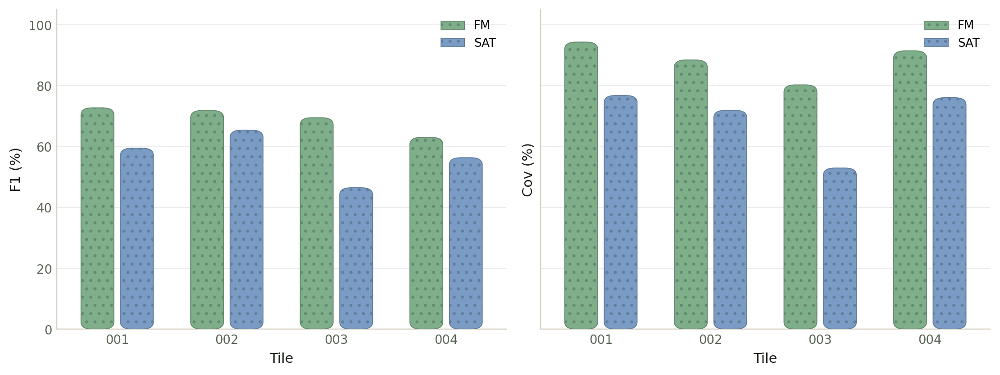
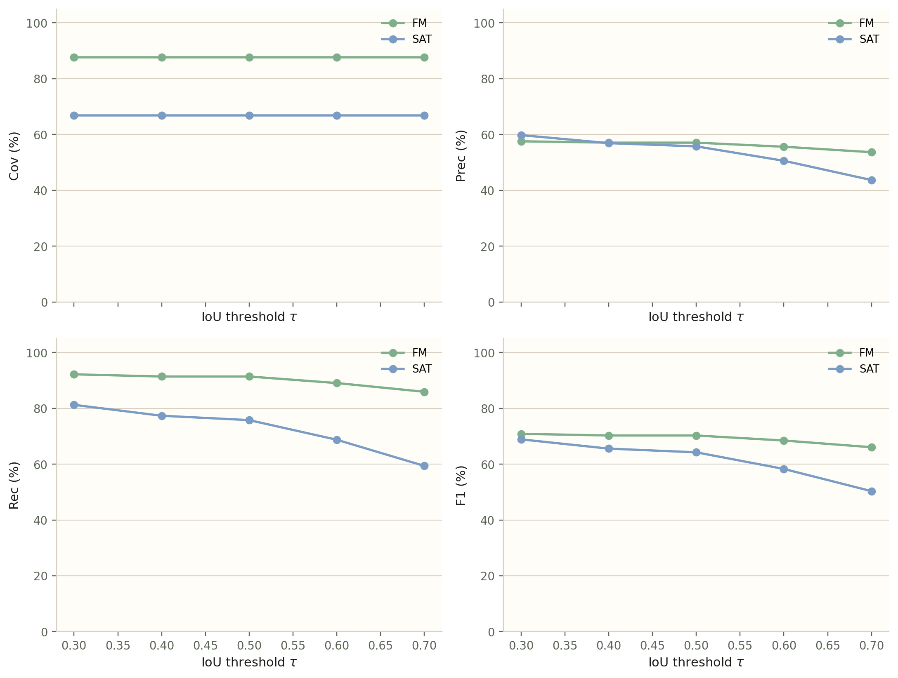
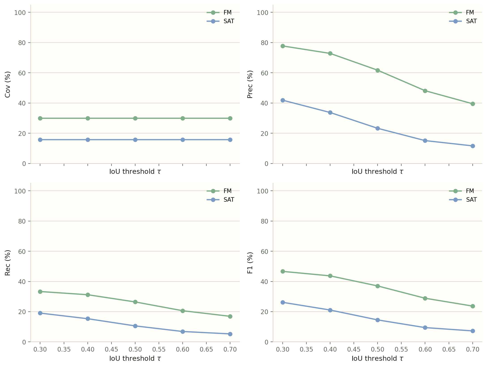
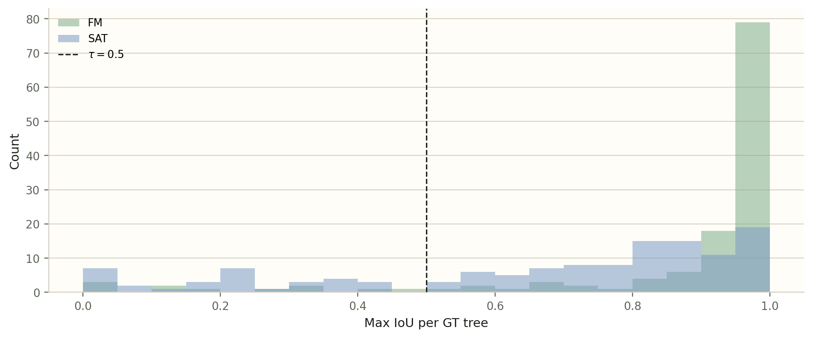
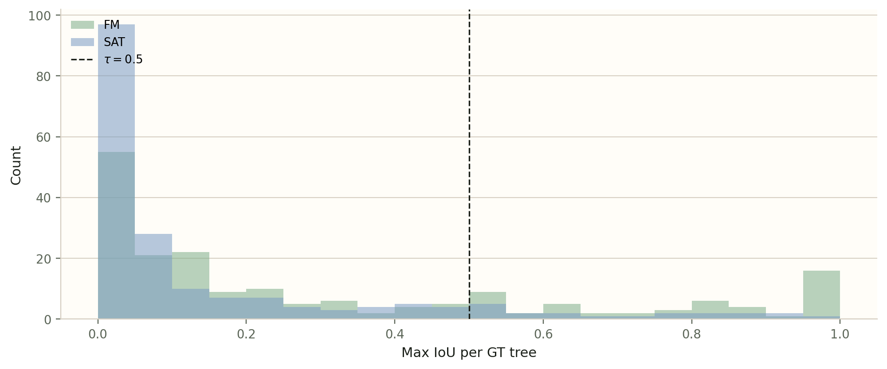
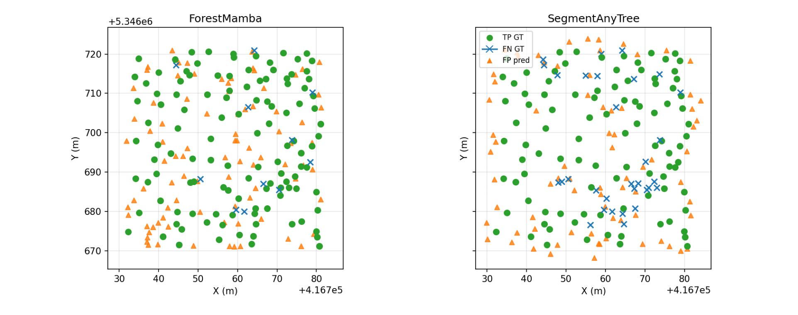
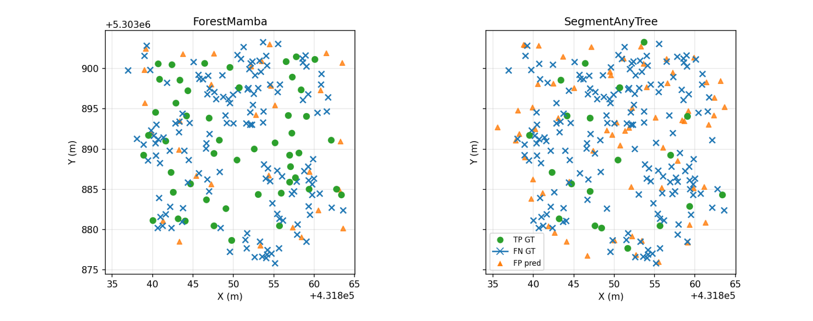
Species supplementary panels
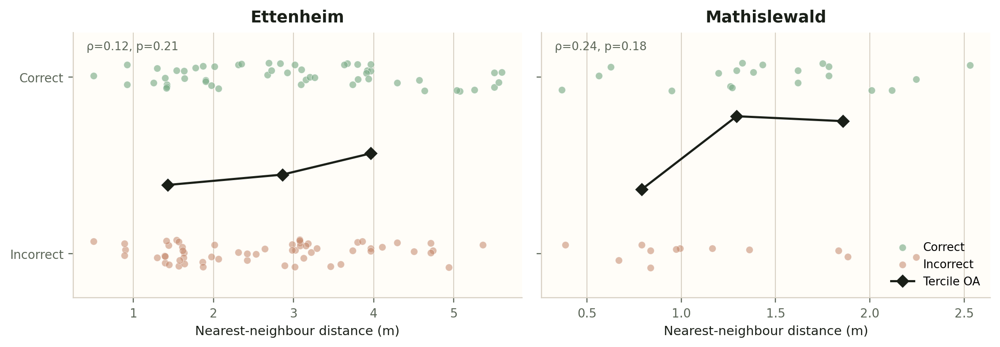
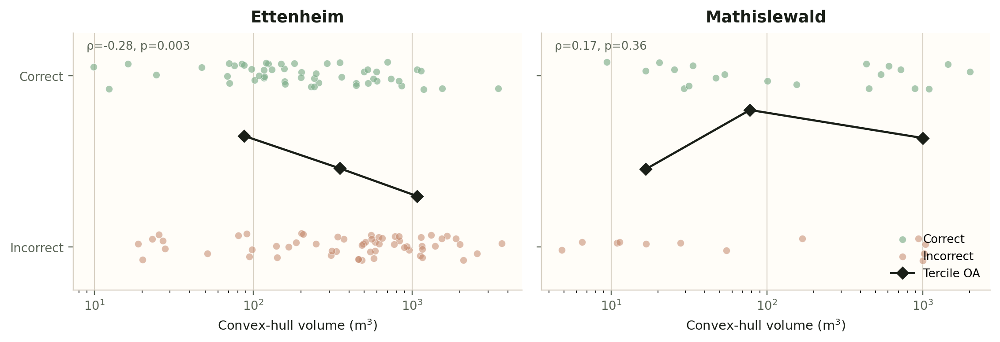
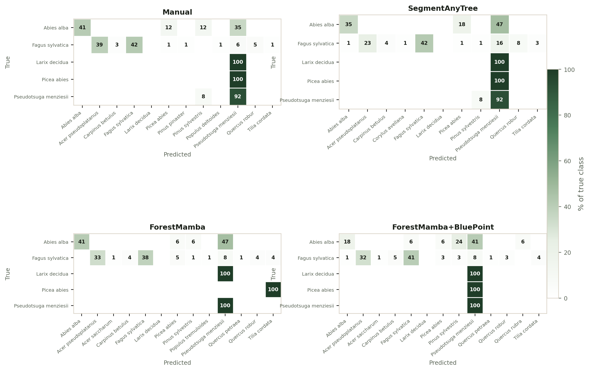
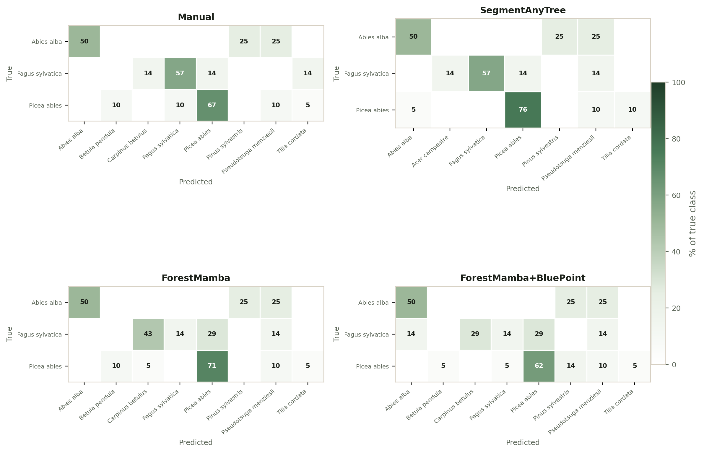